SRS
Software Requirements Specification
Назначение: Документ спецификации программного продукта — агрегатора доставки продуктов из супермаркетов. Цель: Позволить команде разработки оценить трудозатраты и реализовать продукт-аналог.
Как читать этот документ
SRS разделён на два тома. В зависимости от вашей роли читайте соответствующие разделы:
| Роль | Что читать |
|---|---|
| Product Owner / Менеджер | Том 1 целиком. §8 Project Estimation & Roadmap |
| Backend-разработчик | Том 2 целиком. §4 Functional Requirements (BP) — технические заметки внутри каждого BP |
| Frontend-разработчик | Том 1: §1.3 NFR (Usability, Performance Budget). Том 2: §2.2 Technology Stack, §4 Functional Requirements (интерфейсные BP) |
| Mobile-разработчик | Том 2: §2.8 Mobile App Architecture (→ ADR-007), §4.2–§4.3 (Picker/Courier Domain), §4.8 Offline Strategy |
| QA-инженер | Том 1: §1.3 NFR. Том 2: §4 Functional Requirements, §7 Testing Strategy |
| DevOps / SRE | Том 2: §2 Architecture, §5 Infrastructure & DevOps, §6 Security |
| Аналитик / Data Scientist | Том 1: §1.6 Business Model, §4.6 Cross-Cutting (Analytics). Том 2: §3 Data Model |
Том 1: Business Requirements
1. Product Overview (Общие сведения)
1.1 Purpose & Scope
- Назначение продукта: доставка продуктов из супермаркетов (агрегатор, не свой склад)
- Целевая аудитория: B2C (покупатели), B2B (корпоративные заказы в офис)
- Ключевые бизнес-метрики: кол-во заказов/день, выручка, средний чек, конверсия, время сборки, время доставки
- Платформы: Web (Next.js), iOS, Android, Huawei AppGallery, RuStore
1.1.2 Текущее состояние системы (AS IS)
Система существует в продакшене (референс-сервис). Настоящий документ описывает целевую архитектуру (TO BE). Ключевые отличия текущей реализации от целевой:
| Аспект | AS IS (сейчас) | TO BE (цель) |
|---|---|---|
| Архитектура | Монолит Rails | Микросервисы (Rails + Go + Python) |
| Dispatch курьеров | Закреплены за магазином/зоной, редкая переброска вручную | Multi-objective optimization (V3) |
| Поиск | PostgreSQL ILIKE | Elasticsearch (V2) |
| Инфраструктура | Docker Compose, Selectel | Docker → K8s (V3) |
| База данных | PostgreSQL | PostgreSQL per service (V2) |
| Очереди | RabbitMQ | RabbitMQ (без изменений) |
| Состав команды | Backend: 2, Frontend: 2, Mobile: 1, DevOps: 2 | — |
Детальное описание текущих алгоритмов и состав команды — в отдельном документе AUDIT_AS_IS.md.
1.1.3 География покрытия
| Параметр | Значение |
|---|---|
| Основной регион | Санкт-Петербург и Ленинградская область |
| Второй регион (V2) | Москва и Московская область |
| Формат зон доставки | Полигоны на карте, закреплённые за магазинами. Адрес клиента → проверка попадания в зону |
| Количество магазинов (MVP) | 1–3 магазина одной сети (Лента) |
| Количество магазинов (V2) | 5–15 магазинов, 2–3 сети |
| Количество магазинов (V3) | 30+ магазинов, 5+ сетей |
| Плотность зон | В городе — радиус 3–5 км от магазина. В пригороде — до 10–15 км |
| Расширение | Каждый новый город = минимум 3 магазина одной сети для покрытия основных районов |
1.1.4 User Personas (Пользовательские роли)
| Персона | Роль | Кто | Потребности | Боль |
|---|---|---|---|---|
| Клиент B2C | Покупатель | Житель города, 25–45 лет, заказывает продукты домой 1–3 раза в неделю | Широкий ассортимент, быстрая доставка, прозрачные цены, замена при отсутствии | Опоздания, неверные позиции, отсутствие связи с курьером |
| Клиент B2B | Офис-менеджер | Сотрудник компании, заказывает обеды/продукты в офис регулярно | Индивидуальные цены, отсрочка платежа, счета/УПД, регулярные поставки по расписанию | Бумажная волокита, негибкие условия, отсутствие ЭДО |
| Пикер | Сборщик | Сотрудник в магазине, собирает заказы по списку | Чёткий интерфейс, быстрый сканер, offline-режим, простые замены | Плохой интернет в магазине, нечитаемые штрихкоды, отсутствие альтернатив при замене |
| Курьер | Доставщик | Водитель/пеший курьер, доставляет 5–15 заказов за смену | Оптимальный маршрут, быстрая навигация, приём оплаты, фото-подтверждение | Перегруженные маршруты, нет связи с клиентом, offline-зоны |
| Менеджер | Администратор | Сотрудник колл-центра/бэк-офиса, управляет заказами | Полный контроль заказов, управление пользователями, промокодами, магазинами | Ручные операции, отсутствие сводной аналитики, сложный поиск |
| Супер-админ | DevOps / Owner | Технический специалист, управляет системой в целом | Audit log, мониторинг, управление адаптерами сетей, feature flags | Нет observability, сложный деплой, ручной rollback |
1.2 Glossary (Глоссарий)
Источник: Раздел 1.2 исходного документа.
Определения всех ключевых терминов:
- Роли:
- Пикер
- Курьер
- Менеджер (Admin)
- Супер-админ
- DevOps
- Бизнес-термины:
- Агрегатор доставки
- Сеть супермаркетов
- Сборка заказа
- Слот доставки
- Зона доставки
- Замена товара
- Автокурьер
- Опция «Можно раньше»
- Товарное соседство
- Технические термины (каталог):
- Адаптер сети
- Нормализация данных
- Маппинг категорий
- Динамические фильтры
- Sync Queue
- Технические термины (доставка):
- Dispatch
- Cheapest Insertion Heuristic
- 2-opt
- Constraint satisfaction
- OSRM
- ETA
- Архитектурные паттерны:
- Микросервисы
- DDD (Domain-Driven Design)
- CQRS
- Event Sourcing
- Vertical Slice
- Event-Driven
- Feature Flag
- Инфраструктура: Окружения (dev/staging/prod), CI/CD, Rolling update, Rollback, Error Budget, Observability stack
- Юридические: 152-ФЗ, 54-ФЗ, Честный знак (ЦРПТ), ЕГАИС, ОФД, ЭДО, УПД, ЗоЗПП
1.3 Non-Functional Requirements (NFR)
Источник: Раздел 1.3 исходного документа.
| Категория | Must | Should | Could |
|---|---|---|---|
| Performance | p95 < 500ms (каталог), < 200ms (заказ), сборка < 30 мин, доставка < 60 мин | RPS 50→500→5000 | — |
| Availability | 99.9% uptime, at-least-once delivery, idempotent orders | Circuit breaker, DLQ | — |
| Scalability | Horizontal scaling, CDN, RabbitMQ consumers | PgBouncer, Redis Cluster, ES sharding | K8s HPA |
| Security | JWT, RBAC (5 ролей), TLS 1.3, AES-256, rate limiting, audit 1y | SAST/Trivy на каждый PR | — |
| Observability | Prometheus + Grafana, Loki, Sentry | Jaeger tracing | — |
| Usability | Offline-mode пикера и курьера | Startup < 3s, UI p95 < 200ms | WCAG 2.1 AA |
| Portability | Chrome/Firefox/Safari/Edge, iOS 15+, Android 11+ | Huawei, RuStore | — |
| Maintainability | — | Coverage > 80%, linting, ADR, feature flags, Swagger | — |
| Data Retention | Orders 3y, PDn до удаления, audit 1y, cache 15min TTL | Logs 90d | — |
| Data Recovery | Daily full backup + WAL streaming, RPO < 1h, RTO < 4h | DR in another DC | — |
| Food Safety | Термоупаковка (заморозка/охлаждение), разделение химии и продуктов, срок годности > 50% от остатка | Логирование температуры при доставке | — |
| Internationalization | Русский язык (интерфейс, контент, платежи) | Locale-файлы, разделение кода и текста | EN/CN интерфейс (V3) |
1.3.1 Frontend Performance Budget
Конкретные бюджеты производительности для фронтенда (Web + Mobile Web). Согласовано с §2.2 Technology Stack (Next.js 10) и §7.4 Load Testing Targets.
Core Web Vitals:
| Метрика | Цель | Инструмент |
|---|---|---|
| LCP (Largest Contentful Paint) | < 2.5 с | Lighthouse CI / Yandex.Metrica RUM |
| INP (Interaction to Next Paint) | < 200 мс | Lighthouse CI |
| CLS (Cumulative Layout Shift) | < 0.1 | Lighthouse CI |
| TTFB (Time to First Byte) | < 800 мс | Lighthouse CI / Grafana |
Bundle budget:
| Ресурс | Максимум (gzipped) |
|---|---|
| Initial JS (весь фреймворк + роутинг) | < 200 KB |
| Initial CSS | < 50 KB |
| Total initial (JS + CSS + HTML) | < 300 KB |
| Per-route JS (код конкретной страницы) | < 50 KB |
| Vendor JS (библиотеки) | < 100 KB |
Image budget:
| Тип изображения | Максимум | Формат | Примечание |
|---|---|---|---|
| Hero (главный баннер) | < 100 KB | WebP / AVIF | Размеры: 1200×600 |
| Product card (каталог) | < 30 KB | WebP / AVIF | Размеры: 300×300 |
| Product detail (галерея) | < 80 KB | WebP / AVIF | Размеры: 600×600 |
| Total images per page | < 500 KB | — | Сумма всех изображений |
| Lazy loading | Обязательно | — | Всё ниже fold — loading=“lazy” |
Font budget:
| Параметр | Лимит |
|---|---|
| Максимум семейств шрифтов | 2 (например, Inter + Roboto Mono для кода) |
| Максимум начертаний на семейство | 4 (Regular, Medium, Semibold, Bold) |
| Общий вес шрифтов | < 100 KB |
font-display |
swap (обязательно для всех) |
| Подгрузка | preload для основного шрифта, остальные —
preconnect |
Third-party budget:
| Параметр | Лимит |
|---|---|
| Максимум сторонних скриптов | 5 (Метрика, Sentry, CDN-шрифты, чат поддержки, ретаргетинг) |
| Общий вес third-party JS | < 100 KB |
| Асинхронная загрузка | async / defer для всех (кроме
critical) |
| Self-hosted fallback | Sentry → self-hosted Sentry, шрифты → self-hosted |
Monitoring:
| Инструмент | Что измеряем | Порог алерта |
|---|---|---|
| Яндекс.Метрика (RUM) | LCP, INP, CLS, TTFB реальных пользователей | LCP > 3 с у 10% пользователей |
| Lighthouse CI (synthetic) | Performance score, bundle size | Score < 80 → fail |
| Grafana + Prometheus | TTFB сервера (p95) | > 800 мс → alert |
| sentry | JavaScript errors | > 1% сессий с ошибкой |
Enforcement:
| Этап | Инструмент | Действие |
|---|---|---|
| PR (CI) | bundlesize + Lighthouse CI |
Блокировка PR при превышении budget |
| Code review | Чеклист: lazy loading, optimized images, no render-blocking | Ручная проверка |
| Staging | Lighthouse CI diff против baseline | Предупреждение команде |
| Production (ежедневно) | RUM dashboards (Grafana + Yandex.Metrica) | Автоматический алерт при нарушении SLA |
1.4 External Integrations (Внешние интеграции)
Источник: Раздел 1.4 исходного документа.
Сводная таблица всех внешних систем (33 шт.) по категориям:
- CRITICAL (6):
- Т-Банк API
- Лента API
- ОФД
- Selectel Cloud
- GitHub Actions
- Docker Registry
- HIGH (17):
- СБП, METRO, Вкусвилл
- Яндекс.Карты, Google Maps, OSRM
- SMS, FCM, Firestore, Scandit
- ЭДО, CDN
- App Store, Google Play
- MEDIUM (9):
- POS-терминал, Super Babylon, Утконос
- Telegram, Crashlytics
- Честный знак, OpenWeather
- Huawei, RuStore
- LOW (1):
- Календарь праздников
1.5 Error Handling & Resilience (Обработка исключений)
Источник: Раздел 1.5 исходного документа.
- Отказы внешних систем (10):
- сети магазинов, Т-Банк, SMS
- геокодер, OSRM, OpenWeather
- Firebase, CDN и др.
- Отказы внутренних сервисов (6):
- PostgreSQL, Redis, RabbitMQ, ES
- API Gateway, Dispatcher
- Бизнес-исключения (12): товара нет, заказ не подтверждён, платёж не прошёл, курьер не назначен, превышение веса, адрес вне зоны и др.
- DLQ политика (5 очередей): причины попадания и действия
- Матрица timeout’ов (7 компонентов): timeout, retry, fallback
1.6 Business Model (Бизнес-модель)
1.6.1 Доходы (Revenue Streams)
| Статья | Описание | Расчёт | Доля в выручке (оценочно) |
|---|---|---|---|
| Комиссия с заказа | Процент от суммы заказа (маржа агрегатора) | 10–20% от стоимости товаров | ~70% |
| Плата за доставку | Фиксированная стоимость доставки, зависит от зоны и суммы заказа | Бесплатно от N руб, иначе 149–399 руб за адрес | ~15% |
| Сервисный сбор | Фиксированная плата за сборку заказа | 49–99 руб за заказ | ~10% |
| B2B — индивидуальные тарифы | Ежемесячная плата + индивидуальные цены для корпоративных клиентов | Договорная, от 10 000 руб/мес | ~5% |
| Premium-опции | Приоритетная доставка, расширенный временной слот (V3) | +99 руб к заказу | <1% |
1.6.2 Расходы (Cost Structure)
| Статья | Описание | Доля (оценочно) |
|---|---|---|
| Пикеры | Почасовая оплата сотрудников в магазинах | ~35% |
| Курьеры | Сдельная оплата за доставленный заказ (или процент) | ~30% |
| Инфраструктура | Selectel (серверы, CDN), SMS-провайдер, Firebase, API | ~10% |
| Эквайринг | Комиссия Т-Банка / СБП за обработку платежей (1.5–3%) | ~5% |
| Маркетинг | Реклама, промокоды, программа лояльности | ~10% |
| Команда | Разработка, поддержка, менеджмент | ~10% |
1.6.3 Юнит-экономика
| Метрика | B2C | B2B |
|---|---|---|
| Средний чек | 4 800 руб | 8 000–15 000 руб |
| Комиссия сервиса | 15% (720 руб) | 10% + фикс (договор) |
| Стоимость сборки | 180 руб | 300–400 руб |
| Стоимость доставки | 300 руб | 300–500 руб |
| Комиссия эквайринга | ~2.2% (105 руб) | ~2.2% (включено в договор) |
| Маржинальность (до операционных расходов) | ~135 руб | 200–500 руб |
| LTV (жизненный цикл) | 3–6 месяцев (10–20 заказов) | 12+ месяцев (регулярные) |
Ключевой вывод: B2C — бизнес на объёме, маржинальность ~2.8% от оборота (выход в плюс при среднем чеке от 4 500 руб). B2B — бизнес на сервисе, маржинальность 3–6%. Оба сегмента взаимно дополняют друг друга.
1.6.4 Модель ценообразования (Pricing)
| Параметр | Значение |
|---|---|
| Бесплатная доставка от | 2 500–4 000 руб (настраивается для каждого магазина) |
| Стоимость доставки (если не бесплатно) | 199–399 руб |
| Сервисный сбор | 49–99 руб (фикс, не зависит от суммы) |
| Минимальная сумма заказа | 500–800 руб |
| Надбавка за пиковое время | ×1.3 (17:00–20:00) |
| Надбавка за погоду | ×1.2–1.5 (дождь/снег) |
| B2B — отсрочка платежа | 7–30 дней, после утверждения кредитного лимита |
1.6.5 Ключевые метрики для дашборда
| Метрика | Формула | Цель (MVP) |
|---|---|---|
| Заказов/день | — | ≥ 50 |
| Выручка/день | Сумма комиссий + доставка + сервис | ≥ 100 000 руб |
| Средний чек | Выручка / кол-во заказов | ≥ 2 500 руб |
| Конверсия | Заказов / посетителей сайта | ≥ 3% |
| Маржинальность | (Выручка - затраты) / Выручка | > 0% (с V2 — > 10%) |
| CAC (стоимость привлечения) | Расходы на маркетинг / новые клиенты | < 500 руб |
| LTV/CAC | LTV / CAC | > 3 |
| NPS | Опрос клиентов | > 40 |
Том 2: Technical Specification
2. System Architecture (Архитектура системы)
2.1 Architecture Style & Patterns
Микросервисная архитектура (миграция с монолита Rails).
Обоснование: каждый BP можно масштабировать независимо, изолировать сбои в одной сети/платёжном шлюзе, использовать разный стек (Go/Node.js для dispatch, Python для ML ETA).
Архитектурные паттерны:
| Паттерн | Где применить | Зачем |
|---|---|---|
| DDD (Domain-Driven Design) | Catalog, Order, Delivery | Сложная бизнес-логика с разными контекстами (сеть магазинов ≠ доставка) |
| CQRS | Catalog (Read/Write split) | Чтение каталога (веб-клиенты) vs запись (админка, синхронизация) — разные нагрузки и модели |
| Event Sourcing | Order Service | Полная аудитория заказа — цепочка событий (создан → оплачен → назначен пикер → собран → передан курьеру → доставлен) |
| Vertical Slice | Каждый сервис | Каждая фича — сквозная реализация (handler → use case → repository) |
| Event-Driven | Межсервисная коммуникация | RabbitMQ — асинхронная доставка событий (order.created → dispatch → eta) |
| Façade / Service-Adapter | API Gateway | Три типа маршрутов: proxy (сквозной прокси без изменений), transform (адаптация формата между старым и новым API), aggregate (сборка ответа из нескольких сервисов). Ключевой паттерн миграции (Strangler-Fig) — новый сервис подключается за Façade, старый маршрут переключается без изменения клиента |
2.2 Technology Stack
Источник: Раздел 1.1 исходного документа.
| Уровень | Технология | Версия | Назначение |
|---|---|---|---|
| Backend | Ruby on Rails | 5.1+ | API, бизнес-логика, админка |
| Ruby | 2.6–2.7 | Язык рантайма (см. Gemfile) | |
| Sidekiq | ~6.x | Фоновые задачи (уведомления, синхронизация) | |
| Carrierwave + MiniMagick | ~1.0 | Загрузка и обработка изображений | |
| Frontend | Next.js | 10 | SSR + SPA-роутинг |
| React | 17 | UI-компоненты | |
| MobX | ~6.x | State management | |
| Webpack + Babel 7 + PostCSS + CSS Modules | — | Сборка фронтенда | |
| Mobile | Flutter | 3.x | Кроссплатформенное мобильное приложение |
| Базы данных | PostgreSQL | 13+ | Основное хранилище |
| Redis | 6+ | Кэш, очередь (Sidekiq), сессии | |
| Elasticsearch | 7.x | Поисковый индекс (каталог товаров) | |
| Инфраструктура | Selectel | — | Облако, CDN (изображения товаров) |
| Docker / Docker Compose | — | Локальная разработка, тестовые среды | |
| Nginx | — | Reverse proxy, API Gateway | |
| Мониторинг | Sentry | — | Error tracking (backend + mobile) |
| Prometheus + Grafana | — | Метрики + дашборды | |
| Jaeger | — | Distributed tracing | |
| Платежи | Т-Банк API | — | Онлайн-оплата |
| СБП (QR) | — | Оплата при получении |
2.3 Microservices Breakdown
| Сервис | BP | Технология | Хранилище | Коммуникация |
|---|---|---|---|---|
| API Gateway | Cross-cutting | Nginx / Traefik | — | REST → сервисы |
| Auth Service | BP-01 | Rails | PostgreSQL + Redis (sessions) | REST + JWT |
| Catalog Service (Read) | BP-02 | Next.js → API | PostgreSQL (cache: Redis, search: ES) | REST + GraphQL |
| Catalog Service (Write) | BP-02, Chain sync | Ruby (Sidekiq worker) | PostgreSQL + EventStoreDB | Events (RabbitMQ) |
| Cart Service | BP-03 | Rails | Redis | REST (stateless) |
| Order Service | BP-03, BP-07 | Rails + Event Sourcing | PostgreSQL + EventStoreDB | Events + REST |
| Payment Service | BP-04 | Rails / Go | PostgreSQL | REST + Webhooks |
| Picker Service | BP-05 | Rails + Flutter API | PostgreSQL | REST + Firestore (real-time) |
| Delivery Service | BP-06 | Go / Rails | PostgreSQL | Events + REST |
| Dispatcher | BP-06 | Go (или TypeScript) | Redis (geospatial) + PostgreSQL | Events (RabbitMQ) |
| ETA Estimator | BP-06 | Python / Go | Redis (кэш OSRM) | Events + REST |
| Notification Service | BP-09 | Rails (Sidekiq) | PostgreSQL (templates) | Events (RabbitMQ) |
| Admin API | BP-11 | Rails Admin | PostgreSQL | REST |
| Inventory Service | BP-05, BP-02, Store sync | Go / Ruby (Sidekiq) | PostgreSQL + Redis (TTL cache) | Events (RabbitMQ) |
Inventory Service — управление остатками: синхронизация с API магазинов, резервирование при оформлении заказа, TTL-кэш горячих остатков в Redis. Отдельный сервис, так как остатки (a) обновляются с другой частотой (минуты vs часы), (б) требуют reservation-логики, (в) живут по своим SLA.
Коммуникация: сервисы общаются через RabbitMQ (event-driven). REST/gRPC — только для синхронных запросов (API Gateway → сервисы). Event Sourcing — EventStoreDB для Order.
2.4 Architecture Decision Records (ADRs)
| ID | Решение | Статус | Обоснование |
|---|---|---|---|
| ADR-001 | Микросервисы вместо монолита | ✓ | Изоляция blast radius, независимое масштабирование, разный стек для разных задач |
| ADR-002 | RabbitMQ для event-driven | ✓ | Проверенный брокер, поддержка в Rails (Bunny/Sneakers), гарантированная доставка |
| ADR-003 | PostgreSQL per service + Redis cache + ES search | ✓ | Каждый сервис владеет своей БД, Redis для горячего кэша каталога, ES для поиска |
| ADR-004 | Read/Write split Catalog | ✓ | Чтение каталога (веб/мобайл) — высокая нагрузка, запись (админка, синхронизация) — редкая, тяжёлая |
| ADR-005 | Flutter для mobile (picker + courier) | ✓ | Кроссплатформенность, единая кодовая база, offline-first экосистема (Hive + sync queue) |
| ADR-006 | Redis GEO для dispatch | ✓ | GEOADD/GEORADIUS — p95 < 100ms для
поиска ближайших курьеров, против ~380ms с PostGIS |
2.5 Integration Context Map (Context Map)
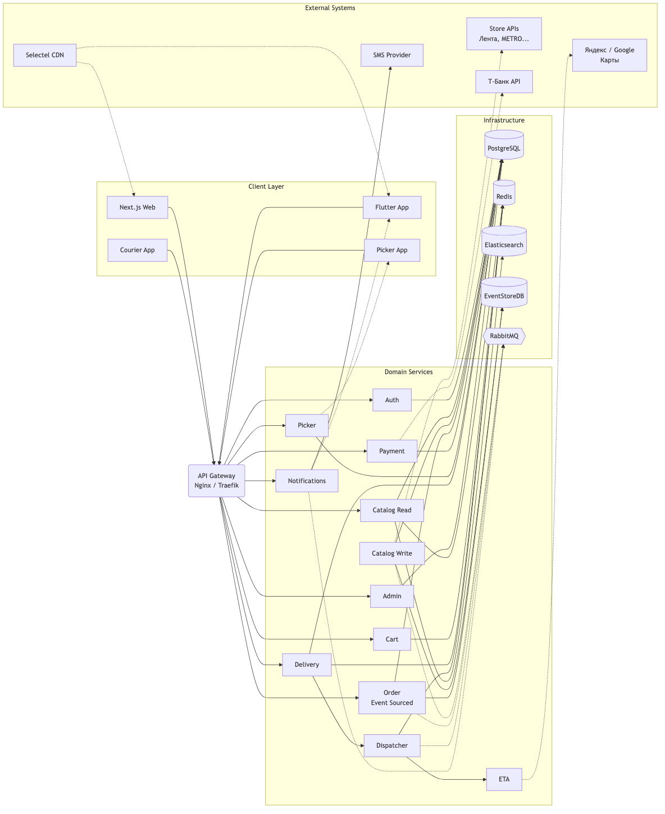
2.5.1 Store API Integration Details
Детальные описания интеграций вынесены в отдельные файлы:
- Лента (MVP): integrations/lenta.md
- Вкусвилл (V2): integrations/vkusvill.md
- Super Babylon (V2): без API — физическое присутствие сборщика в магазине
2.6 Observability
| Компонент | Назначение | Интеграция |
|---|---|---|
| Prometheus | Сбор метрик со всех сервисов (/metrics) |
Pull-модель |
| Grafana | Дашборды: services-overview,
business-metrics, slo-violations |
Предустановленные дашборды |
| Loki + Promtail | Централизованный сбор логов (JSON-structured) | LogQL для поиска |
| Jaeger | Distributed tracing | OpenTelemetry instrumentation |
| Sentry | Error tracking (backend + Flutter) | SDK на всех сервисах |
| Яндекс.Метрика | Бизнес-аналитика: конверсии, воронки, источники трафика | Установка счётчика на Web (Next.js) |
Разделение: Prometheus/Grafana — технический мониторинг (латентность, ошибки, ёмкость). Яндекс.Метрика — бизнес-аналитика (поведение пользователей, конверсия).
2.6.1 Analytics Events Schema
Стандартная схема событий для продуктовой аналитики. Используется всеми сервисами (backend + frontend + mobile) для единообразного сбора данных. Согласовано с §2.9 Event Catalog (бизнес-события не дублируются) и §6.2 Data Protection (PII-фильтрация).
Стандартная схема:
{
"event_name": "product_clicked",
"timestamp": "2026-06-17T10:00:00Z",
"user_id": "uuid",
"session_id": "uuid",
"device_type": "web",
"properties": {
"product_id": "12345",
"price": 499.90,
"position": 3,
"source": "search_results"
}
}Каталог событий:
| Событие | Когда | Ключевые properties | Sampling |
|---|---|---|---|
catalog_viewed |
Открытие каталога | store_id, category_id, sorting | 10% |
product_viewed |
Открытие карточки товара | product_id, price, position | 10% |
product_clicked |
Клик по товару в списке | product_id, position, source (search/category/promo) | 10% |
search_performed |
Поиск | query, results_count, filters | 10% |
cart_updated |
Изменение корзины | action (add/remove), product_id, delta, cart_value | 100% |
checkout_started |
Переход к оформлению | cart_value, items_count, selected_slot | 100% |
payment_started |
Начало оплаты | method (card/sbp/cash), amount | 100% |
payment_completed |
Успешная оплата | method, amount, payment_id | 100% |
payment_failed |
Неудачная оплата | method, amount, error_code, error_reason | 100% |
order_created |
Заказ создан | order_id, value, items_count, store_id | 100% |
order_cancelled |
Заказ отменён | order_id, reason (client/no_stock/other), stage | 100% |
promo_applied |
Промокод применён | code, discount_percent, discount_value | 100% |
courier_assigned |
Курьер назначен | order_id, eta_minutes | 100% |
delivery_started |
Курьер выехал | order_id, courier_id | 100% |
delivery_completed |
Доставка завершена | order_id, on_time (bool) | 100% |
app_opened |
Открытие мобильного приложения | app_version, platform | 10% |
screen_viewed |
Просмотр экрана (mobile) | screen_name, referrer | 10% |
PII-фильтрация:
| Категория | Данные | Разрешено? |
|---|---|---|
| НЕ трекать | Телефон, email, точный адрес (улица+дом), ФИО, номер карты | ❌ Запрещено |
| МОЖНО трекать | user_id (UUID, анонимизированный), город, категория товара, store_id | ✅ Разрешено |
| Только с согласия | Точная геолокация (lat/lng), device ID | ⚠️ Требуется consent |
Интеграции:
| Система | Назначение | Статус |
|---|---|---|
| Яндекс.Метрика | Основная бизнес-аналитика (воронки, конверсии, отчёты) | MVP (Web) |
| Firebase Analytics | Мобильная аналитика (iOS/Android) | MVP |
| ClickHouse | Хранилище сырых событий для data team (кастомные запросы, ML) | V2 |
| Amplitude / Mixpanel | Продуктовая аналитика (retention, cohorts, A/B) | V2 |
Enforcement:
| Этап | Что проверяем | Инструмент |
|---|---|---|
| PR (backend) | Новые события зарегистрированы в каталоге | Code review + JSON Schema validation |
| PR (frontend/mobile) | Событие отправляется с правильными полями | Code review + TypeScript types |
| Staging | Валидность JSON-схемы события | Integration test (event emitted → schema valid) |
| Prod monitoring | Дельта событий (не упала ли какая-то воронка) | Grafana dashboard + alert |
2.7 API Versioning, Deprecation Policy & Error Code Standard
2.7.1 API Versioning
- Формат URL:
/api/v1/,/api/v2/ - Версия передаётся в URL path (не header) — явно видна в логах и документации
- Minor-изменения (добавление полей) — обратно совместимы, без смены версии
- Major-изменения (удаление/переименование полей, изменение семантики) — новая версия URL
2.7.2 Deprecation Policy
SLA поддержки старых версий:
| Тип изменения | SLA поддержки после объявления deprecation |
|---|---|
| Minor (v1.1 → v1.2) | 3 месяца |
| Major (v1 → v2) | 12 месяцев |
| Критические security-фиксы | До конца SLA |
Механизмы уведомления клиентов:
| Канал | Когда | Для кого |
|---|---|---|
HTTP-заголовок Sunset: <date> (RFC 8594) |
За 6 месяцев | Все API-клиенты |
HTTP-заголовок Deprecation: true |
С момента объявления | Все API-клиенты |
HTTP-заголовок
Link: <url>; rel="successor-version" |
С момента объявления | Все API-клиенты |
| Email-уведомление | За 3 месяца | B2B-клиенты |
| In-app баннер | За 1 месяц | Мобильные приложения |
Migration Guide:
- Для каждой major-версии — отдельный документ
docs/migrations/v1-to-v2.md - Changelog breaking changes
- Примеры кода «было → стало»
2.7.3 Стратегия для мобильных приложений
| Механизм | Описание |
|---|---|
| Forced update | При критических breaking changes — X-Min-App-Version
header, блокировка старых версий |
| Soft deprecation | In-app баннер «Обновите приложение» для не-критических изменений |
| N-2 support | Поддержка двух последних major-версий (iOS/Android) |
| Graceful degradation | Старая версия продолжает работать, но новые фичи недоступны |
2.7.4 Feature Flags для API
- Возможность включать новые эндпоинты по одному (canary release)
- A/B-тестирование версий API
- Feature flag provider: LaunchDarkly / ConfigCat / встроенный в админку
2.7.5 Error Code Standard
Формат ответа с ошибкой:
{
"error": {
"code": "ORDER_NOT_FOUND",
"message": "Заказ с указанным ID не найден",
"details": { "order_id": "12345" },
"request_id": "req_abc123"
}
}Категории ошибок:
| Диапазон | Категория | Примеры |
|---|---|---|
AUTH_* |
Аутентификация/авторизация | AUTH_TOKEN_EXPIRED,
AUTH_INSUFFICIENT_ROLE |
VAL_* |
Валидация | VAL_MISSING_FIELD, VAL_INVALID_FORMAT |
BIZ_* |
Бизнес-логика | BIZ_PRODUCT_UNAVAILABLE,
BIZ_ORDER_CANNOT_CANCEL |
INT_* |
Интеграция | INT_PAYMENT_DECLINED,
INT_STORE_API_ERROR |
SYS_* |
Системные | SYS_INTERNAL_ERROR, SYS_TIMEOUT |
2.9 Event Catalog
Система событий (Event-Driven через RabbitMQ). Каждое событие публикуется одним сервисом, потребляется одним или несколькими.
| Событие | Publisher | Consumers | Схема (ключевые поля) |
|---|---|---|---|
order.created |
Order Service | Dispatcher, Notification, Analytics | order_id, user_id, store_id,
total, items[] |
order.paid |
Payment Service | Order, Dispatcher, Notification | order_id, payment_id, amount,
method |
order.assigned |
Dispatcher | Order, Picker, Courier, Notification | order_id, picker_id,
courier_id, eta |
order.picking_started |
Picker Service | Order, Notification, Analytics | order_id, picker_id,
started_at |
order.picking_completed |
Picker Service | Delivery, Order, Notification | order_id, picker_id,
items_found, items_substituted |
order.in_transit |
Delivery Service | Order, Notification, Tracking | order_id, courier_id, eta,
route[] |
order.delivered |
Courier App | Order, Payment, Notification, Analytics | order_id, courier_id,
pod_signature, pod_photo |
order.cancelled |
Order Service | Payment, Inventory, Notification | order_id, reason,
refund_amount |
payment.refunded |
Payment Service | Order, Notification, Analytics | order_id, refund_id,
amount |
inventory.low |
Inventory Service | Admin, Notification | store_id, product_id,
quantity |
catalog.synced |
Catalog Write Service | Inventory, Analytics | chain_id, products_count,
errors |
dispatch.cycle |
Dispatcher | ETA Estimator, Delivery | zone_id, orders[],
couriers[] |
2.10 State Machine Diagrams
Формальные State Machine Diagrams для ключевых сущностей. Каждый переход включает триггер, preconditions, postconditions, инициатора и публикуемое событие.
2.10.1 Order
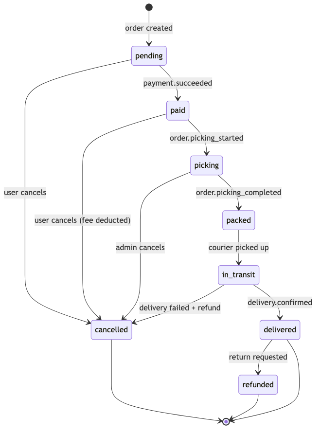
| Переход | Триггер | Preconditions | Postconditions | Инициатор | Событие |
|---|---|---|---|---|---|
pending → paid |
payment.succeeded webhook |
order.status == ‘pending’, payment.status == ‘succeeded’ | order.status = ‘paid’, payment recorded | Payment Service | order.paid |
pending → cancelled |
User clicks “Cancel” | order.status == ‘pending’ | order.status = ‘cancelled’, full refund | Customer | order.cancelled |
paid → picking |
Dispatcher assigns picker | order.status == ‘paid’, picker available | order.status = ‘picking’, picker_id set | Dispatcher | order.picking_started |
paid → cancelled |
User clicks “Cancel” | order.status == ‘paid’, picking not started | order.status = ‘cancelled’, refund minus fee | Customer | order.cancelled |
picking → packed |
Picker confirms packing | order.status == ‘picking’, all items processed | order.status = ‘packed’, packed_at set | Picker App | order.picking_completed |
picking → cancelled |
Admin cancels | order.status == ‘picking’ | order.status = ‘cancelled’, refund processed | Admin | order.cancelled |
packed → in_transit |
Courier picks up | order.status == ‘packed’, courier assigned | order.status = ‘in_transit’, picked_up_at set | Courier App | order.in_transit |
in_transit → delivered |
Courier confirms delivery | order.status == ‘in_transit’, POD captured | order.status = ‘delivered’, delivered_at set | Courier App | order.delivered |
in_transit → cancelled |
Delivery failed | order.status == ‘in_transit’, delivery failed | order.status = ‘cancelled’, full refund | System | order.cancelled |
delivered → refunded |
Return requested | order.status == ‘delivered’, within 14 days | order.status = ‘refunded’, refund processed | Customer | payment.refunded |
2.10.2 Payment
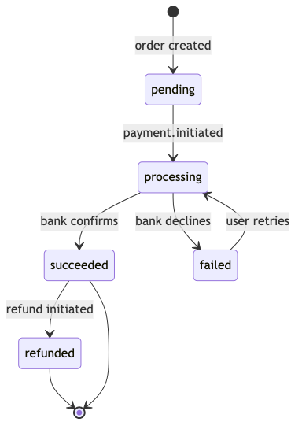
| Переход | Триггер | Preconditions | Postconditions | Инициатор | Событие |
|---|---|---|---|---|---|
pending → processing |
User submits payment | payment.status == ‘pending’, payment method selected | payment.status = ‘processing’, bank request sent | Payment Service | — |
processing → succeeded |
Bank webhook (success) | payment.status == ‘processing’, 3DSecure passed | payment.status = ‘succeeded’, order.status = ‘paid’ | T-Bank | order.paid |
processing → failed |
Bank webhook (decline) | payment.status == ‘processing’, bank declined | payment.status = ‘failed’, error stored | T-Bank | — |
succeeded → refunded |
Admin initiates refund | payment.status == ‘succeeded’, refund requested | payment.status = ‘refunded’, money returned | Payment Service | payment.refunded |
failed → processing |
User retries payment | payment.status == ‘failed’, within retry limit | payment.status = ‘processing’, new bank request | Payment Service | — |
2.10.3 Delivery
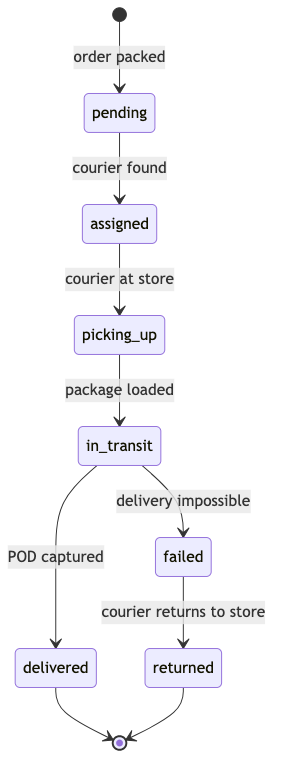
| Переход | Триггер | Preconditions | Postconditions | Инициатор | Событие |
|---|---|---|---|---|---|
pending → assigned |
Dispatcher assigns courier | delivery.status == ‘pending’, courier found | delivery.status = ‘assigned’, courier_id, ETA set | Dispatcher | order.assigned |
assigned → picking_up |
Courier arrives at store | delivery.status == ‘assigned’, courier at store location | delivery.status = ‘picking_up’ | Courier App | — |
picking_up → in_transit |
Courier loads package | delivery.status == ‘picking_up’, package scanned | delivery.status = ‘in_transit’, route started | Courier App | order.in_transit |
in_transit → delivered |
Courier confirms delivery | delivery.status == ‘in_transit’, POD captured | delivery.status = ‘delivered’, delivered_at set | Courier App | order.delivered |
in_transit → failed |
Delivery timeout / customer unavailable | delivery.status == ‘in_transit’, max attempts reached | delivery.status = ‘failed’, return initiated | System | — |
failed → returned |
Courier returns package to store | delivery.status == ‘failed’, package intact | delivery.status = ‘returned’, stock restored | Courier App | — |
2.10.4 Courier
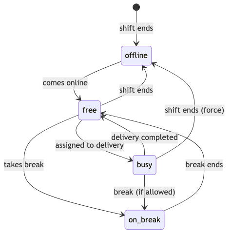
| Переход | Триггер | Preconditions | Postconditions | Инициатор | Событие |
|---|---|---|---|---|---|
offline → free |
Courier comes online | courier.status == ‘offline’, shift scheduled | courier.status = ‘free’, available for dispatch | Courier App | — |
free → busy |
Delivery assigned | courier.status == ‘free’, dispatch picks courier | courier.status = ‘busy’, active_delivery_id set | Dispatcher | — |
busy → free |
Delivery completed | courier.status == ‘busy’, delivery marked done | courier.status = ‘free’, ready for next | Courier App | — |
free → on_break |
Courier starts break | courier.status == ‘free’, break quota remaining | courier.status = ‘on_break’, break_start set | Courier App | — |
on_break → free |
Break ends | courier.status == ‘on_break’, break_duration >= min | courier.status = ‘free’ | System | — |
free → offline |
Courier goes offline | courier.status == ‘free’ | courier.status = ‘offline’ | Courier App | — |
busy → on_break |
Courier takes break (if allowed) | courier.status == ‘busy’, no active delivery, break quota remaining | courier.status = ‘on_break’, break_start set | Courier App | — |
busy → offline |
Shift ends (force) | courier.status == ‘busy’, shift ended | courier.status = ‘offline’, active_delivery_id unset | System | — |
2.10.5 Picker Task
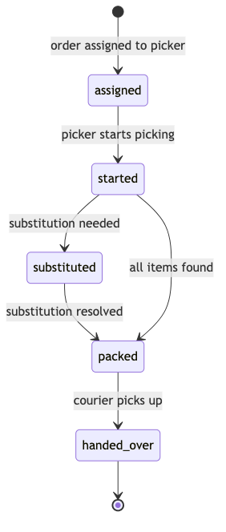
| Переход | Триггер | Preconditions | Postconditions | Инициатор | Событие |
|---|---|---|---|---|---|
assigned → started |
Picker opens task | task.status == ‘assigned’, picker accepted | task.status = ‘started’, started_at set | Picker App | order.picking_started |
started → substituted |
Item out of stock, alternative found | task.status == ‘started’, item unavailable, customer agreed | task.status = ‘substituted’, substitution logged | Picker App | — |
substituted → packed |
All items processed | task.status == ‘substituted’, remaining items picked | task.status = ‘packed’, packed_at set | Picker App | — |
started → packed |
All items found | task.status == ‘started’, no substitutions needed | task.status = ‘packed’, packed_at set | Picker App | order.picking_completed |
packed → handed_over |
Courier receives package | task.status == ‘packed’, courier at store | task.status = ‘handed_over’, handover_at set | Courier App | — |
2.11 Sequence Diagrams
Sequence Diagrams для 5 критических сценариев. Участники — реальные
сервисы из §2.3, события из §2.9. Сплошные стрелки (→) —
синхронные вызовы, пунктирные (-->>) — асинхронные
события.
2.11.1 Оформление заказа
Сценарий: Клиент выбирает товары, оформляет заказ, оплачивает онлайн через Т-Банк.
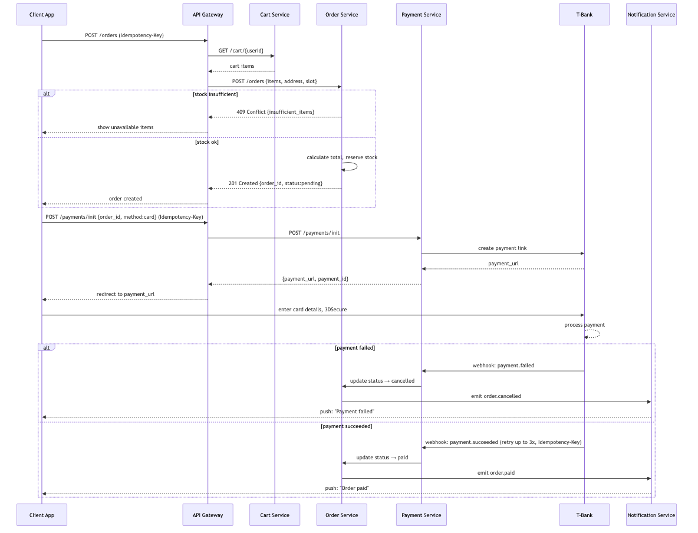
2.11.2 Сборка с заменой товара
Сценарий: Пикер собирает заказ, обнаруживает отсутствующий товар, звонит клиенту, предлагает замену.
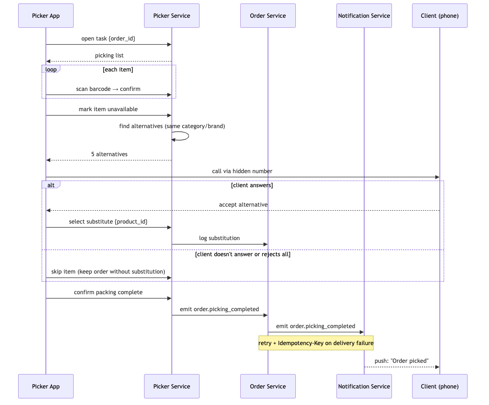
2.11.3 Назначение курьера (Dispatch)
Сценарий: Заказ собран — диспетчер назначает ближайшего курьера, рассчитывает ETA, уведомляет клиента.
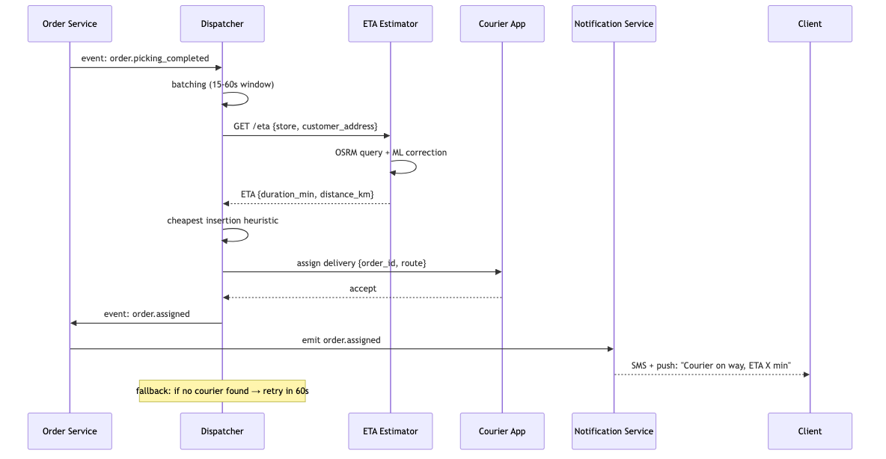
2.11.4 Refund
Сценарий: Клиент запрашивает возврат, система инициирует refund через платёжный шлюз.
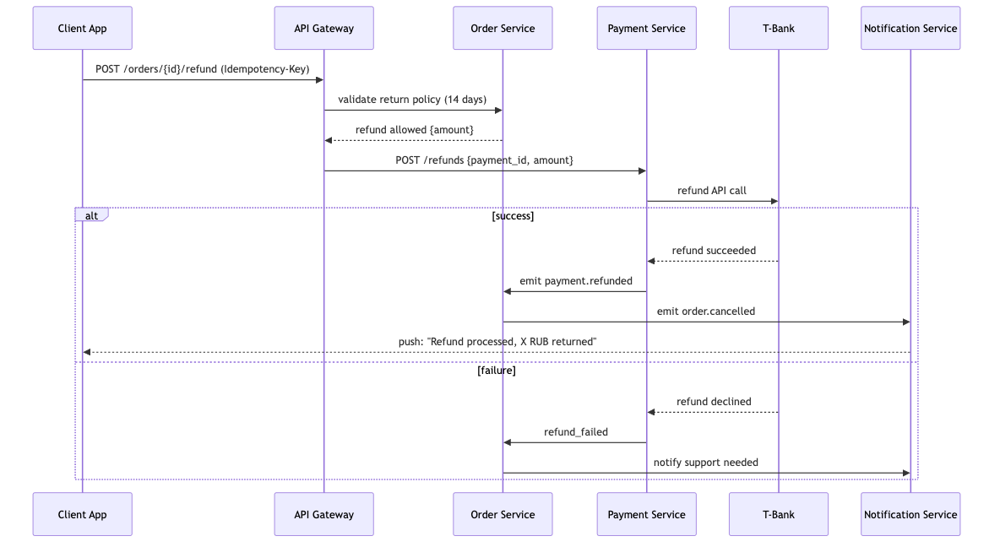
2.11.5 Offline-sync курьера
Сценарий: Курьер теряет интернет во время доставки, отмечает доставку офлайн, данные синхронизируются позже.
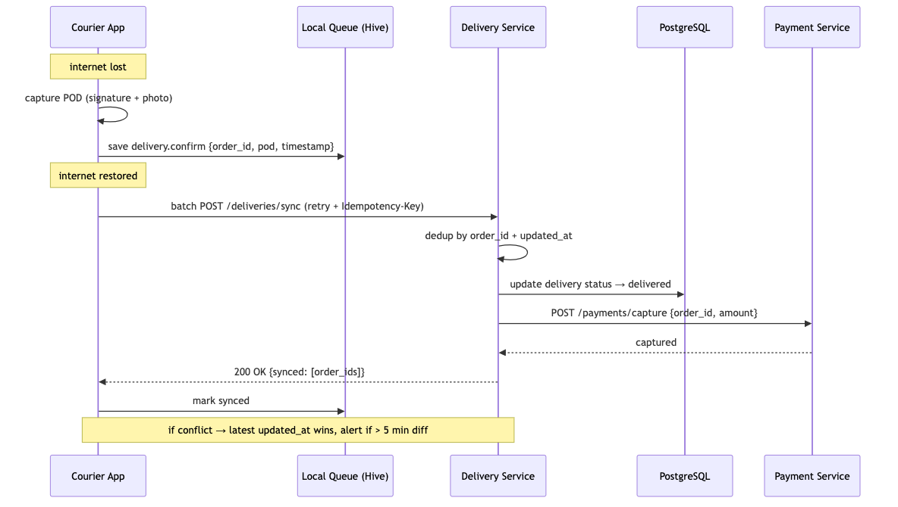
2.12 Event JSON Schemas
Стандартный envelope для всех событий и полные JSON Schema (draft-07) для каждого из 12 событий из §2.9.
2.12.1 Envelope
Единая обёртка для всех событий в системе:
{
"event_id": "uuid-v4",
"event_type": "order.created",
"occurred_at": "2026-06-17T10:00:00Z",
"aggregate_id": "order_12345",
"aggregate_type": "order",
"payload": { ... },
"metadata": {
"correlation_id": "uuid",
"causation_id": "uuid",
"user_id": "user_67890",
"source": "order-service",
"schema_version": "1.0"
}
}Поля envelope:
| Поле | Тип | Обязательное | Описание |
|---|---|---|---|
event_id |
string (uuid) | ✅ | Уникальный ID события |
event_type |
string (enum) | ✅ | Тип события из §2.9 |
occurred_at |
string (ISO8601) | ✅ | Время наступления события |
aggregate_id |
string | ✅ | ID сущности (напр. order_12345) |
aggregate_type |
string | ✅ | Тип сущности (order/payment/delivery/courier) |
payload |
object | ✅ | Тело события (зависит от event_type) |
metadata.correlation_id |
string (uuid) | ✅ | Для tracing — сквозной ID всей цепочки |
metadata.causation_id |
string (uuid) | ✅ | ID события-причины (parent event) |
metadata.user_id |
string | ❌ | ID пользователя, инициировавшего действие |
metadata.source |
string | ✅ | Сервис-отправитель |
metadata.schema_version |
string | ✅ | Версия схемы (semver) |
2.12.2 Схемы событий
order.created
{
"$schema": "http://json-schema.org/draft-07/schema#",
"type": "object",
"required": ["order_id", "user_id", "store_id", "total", "items", "delivery_slot"],
"properties": {
"order_id": { "type": "string", "pattern": "^order_\\d+$" },
"user_id": { "type": "string", "pattern": "^user_\\d+$" },
"store_id": { "type": "string", "pattern": "^store_\\d+$" },
"total": { "type": "number", "minimum": 0, "multipleOf": 0.01 },
"delivery_fee": { "type": "number", "minimum": 0 },
"items": {
"type": "array",
"minItems": 1,
"items": {
"type": "object",
"required": ["product_id", "quantity", "price"],
"properties": {
"product_id": { "type": "string" },
"quantity": { "type": "integer", "minimum": 1 },
"price": { "type": "number", "minimum": 0 }
}
}
},
"delivery_slot": {
"type": "object",
"required": ["start", "end"],
"properties": {
"start": { "type": "string", "format": "date-time" },
"end": { "type": "string", "format": "date-time" }
}
},
"payment_method": { "type": "string", "enum": ["card", "sbp", "cash", "card_courier"] }
}
}Пример:
{
"order_id": "order_12345",
"user_id": "user_67890",
"store_id": "store_42",
"total": 1850.50,
"delivery_fee": 99.00,
"items": [
{"product_id": "prod_1001", "quantity": 2, "price": 450.00},
{"product_id": "prod_1002", "quantity": 1, "price": 350.50}
],
"delivery_slot": {"start": "2026-06-17T18:00:00Z", "end": "2026-06-17T20:00:00Z"},
"payment_method": "card"
}order.paid
{
"$schema": "http://json-schema.org/draft-07/schema#",
"type": "object",
"required": ["order_id", "payment_id", "amount", "method"],
"properties": {
"order_id": { "type": "string" },
"payment_id": { "type": "string" },
"amount": { "type": "number", "minimum": 0 },
"method": { "type": "string", "enum": ["card", "sbp", "cash", "card_courier"] },
"provider": { "type": "string", "enum": ["t-bank", "sbp"] },
"paid_at": { "type": "string", "format": "date-time" }
}
}Пример:
{"order_id": "order_12345", "payment_id": "pay_9876", "amount": 1850.50, "method": "card", "provider": "t-bank", "paid_at": "2026-06-17T10:05:00Z"}
order.assigned
{
"$schema": "http://json-schema.org/draft-07/schema#",
"type": "object",
"required": ["order_id", "picker_id", "courier_id", "eta"],
"properties": {
"order_id": { "type": "string" },
"picker_id": { "type": "string" },
"courier_id": { "type": "string" },
"eta": {
"type": "object",
"required": ["delivery_min", "distance_km"],
"properties": {
"delivery_min": { "type": "integer", "minimum": 1 },
"distance_km": { "type": "number", "minimum": 0 }
}
}
}
}Пример:
{"order_id": "order_12345", "picker_id": "picker_55", "courier_id": "courier_88", "eta": {"delivery_min": 35, "distance_km": 4.2}}
order.picking_started
{
"$schema": "http://json-schema.org/draft-07/schema#",
"type": "object",
"required": ["order_id", "picker_id", "started_at"],
"properties": {
"order_id": { "type": "string" },
"picker_id": { "type": "string" },
"started_at": { "type": "string", "format": "date-time" }
}
}Пример:
{"order_id": "order_12345", "picker_id": "picker_55", "started_at": "2026-06-17T10:10:00Z"}
order.picking_completed
{
"$schema": "http://json-schema.org/draft-07/schema#",
"type": "object",
"required": ["order_id", "picker_id", "items_found", "items_substituted"],
"properties": {
"order_id": { "type": "string" },
"picker_id": { "type": "string" },
"packed_at": { "type": "string", "format": "date-time" },
"items_found": { "type": "integer", "minimum": 0 },
"items_substituted": { "type": "integer", "minimum": 0 },
"substitutions": {
"type": "array",
"items": {
"type": "object",
"properties": {
"original_product_id": { "type": "string" },
"substitute_product_id": { "type": "string" },
"customer_approved": { "type": "boolean" }
}
}
}
}
}Пример:
{"order_id": "order_12345", "picker_id": "picker_55", "packed_at": "2026-06-17T10:25:00Z", "items_found": 8, "items_substituted": 1, "substitutions": [{"original_product_id": "prod_1001", "substitute_product_id": "prod_1003", "customer_approved": true}]}
order.in_transit
{
"$schema": "http://json-schema.org/draft-07/schema#",
"type": "object",
"required": ["order_id", "courier_id", "eta"],
"properties": {
"order_id": { "type": "string" },
"courier_id": { "type": "string" },
"eta": {
"type": "object",
"required": ["delivery_min", "distance_km"],
"properties": {
"delivery_min": { "type": "integer", "minimum": 1 },
"distance_km": { "type": "number", "minimum": 0 }
}
},
"route": {
"type": "array",
"items": {
"type": "object",
"properties": {
"lat": { "type": "number" },
"lng": { "type": "number" },
"timestamp": { "type": "string", "format": "date-time" }
}
}
}
}
}Пример:
{"order_id": "order_12345", "courier_id": "courier_88", "eta": {"delivery_min": 18, "distance_km": 2.5}}
order.delivered
{
"$schema": "http://json-schema.org/draft-07/schema#",
"type": "object",
"required": ["order_id", "courier_id", "delivered_at"],
"properties": {
"order_id": { "type": "string" },
"courier_id": { "type": "string" },
"delivered_at": { "type": "string", "format": "date-time" },
"pod_signature": { "type": "string", "description": "Base64-encoded signature image" },
"pod_photo": { "type": "string", "description": "URL to delivery photo" },
"payment_collected": { "type": "number", "description": "Amount collected on delivery" }
}
}Пример:
{"order_id": "order_12345", "courier_id": "courier_88", "delivered_at": "2026-06-17T10:50:00Z", "pod_signature": "iVBORw0KGgo...", "payment_collected": 350.00}
order.cancelled
{
"$schema": "http://json-schema.org/draft-07/schema#",
"type": "object",
"required": ["order_id", "reason", "cancelled_at"],
"properties": {
"order_id": { "type": "string" },
"reason": { "type": "string", "enum": ["user_cancelled", "admin_cancelled", "delivery_failed", "payment_failed", "timeout"] },
"cancelled_at": { "type": "string", "format": "date-time" },
"refund_amount": { "type": "number", "minimum": 0 },
"refund_status": { "type": "string", "enum": ["pending", "processed", "none"] }
}
}Пример:
{"order_id": "order_12345", "reason": "user_cancelled", "cancelled_at": "2026-06-17T09:30:00Z", "refund_amount": 1850.50, "refund_status": "processed"}
payment.refunded
{
"$schema": "http://json-schema.org/draft-07/schema#",
"type": "object",
"required": ["order_id", "refund_id", "amount", "refunded_at"],
"properties": {
"order_id": { "type": "string" },
"refund_id": { "type": "string" },
"amount": { "type": "number", "minimum": 0 },
"refunded_at": { "type": "string", "format": "date-time" },
"reason": { "type": "string" }
}
}Пример:
{"order_id": "order_12345", "refund_id": "refund_777", "amount": 1850.50, "refunded_at": "2026-06-17T11:00:00Z", "reason": "customer_return"}
inventory.low
{
"$schema": "http://json-schema.org/draft-07/schema#",
"type": "object",
"required": ["store_id", "product_id", "quantity"],
"properties": {
"store_id": { "type": "string" },
"product_id": { "type": "string" },
"quantity": { "type": "integer", "minimum": 0 },
"threshold": { "type": "integer", "minimum": 1 }
}
}Пример:
{"store_id": "store_42", "product_id": "prod_1001", "quantity": 3, "threshold": 10}
catalog.synced
{
"$schema": "http://json-schema.org/draft-07/schema#",
"type": "object",
"required": ["chain_id", "synced_at"],
"properties": {
"chain_id": { "type": "string" },
"synced_at": { "type": "string", "format": "date-time" },
"products_count": { "type": "integer", "minimum": 0 },
"categories_count": { "type": "integer", "minimum": 0 },
"errors": { "type": "array", "items": { "type": "string" } },
"duration_seconds": { "type": "integer", "minimum": 0 }
}
}Пример:
{"chain_id": "lenta", "synced_at": "2026-06-17T06:00:00Z", "products_count": 15234, "categories_count": 87, "errors": [], "duration_seconds": 145}
dispatch.cycle
{
"$schema": "http://json-schema.org/draft-07/schema#",
"type": "object",
"required": ["zone_id", "cycle_id", "orders"],
"properties": {
"zone_id": { "type": "string" },
"cycle_id": { "type": "string" },
"orders": {
"type": "array",
"items": {
"type": "object",
"required": ["order_id", "store_id", "destination"],
"properties": {
"order_id": { "type": "string" },
"store_id": { "type": "string" },
"destination": {
"type": "object",
"properties": {
"lat": { "type": "number" },
"lng": { "type": "number" },
"address": { "type": "string" }
}
},
"weight_kg": { "type": "number", "maximum": 80 }
}
}
},
"available_couriers": {
"type": "array",
"items": {
"type": "object",
"properties": {
"courier_id": { "type": "string" },
"current_location": { "type": "object", "properties": { "lat": { "type": "number" }, "lng": { "type": "number" } } },
"status": { "type": "string", "enum": ["free", "busy"] }
}
}
}
}
}Пример:
{"zone_id": "zone_central", "cycle_id": "cycle_20260617_1845", "orders": [{"order_id": "order_12345", "store_id": "store_42", "destination": {"lat": 55.7558, "lng": 37.6173, "address": "ул. Тверская, 1"}, "weight_kg": 12.5}], "available_couriers": [{"courier_id": "courier_88", "current_location": {"lat": 55.7600, "lng": 37.6200}, "status": "free"}]}
2.12.3 Матрица соответствия
| Событие | Envelope event_type | Агрегат | Payload required fields | PII в payload |
|---|---|---|---|---|
| order.created | order.created |
order | 6 | ❌ (user_id только ID) |
| order.paid | order.paid |
order | 4 | ❌ |
| order.assigned | order.assigned |
order | 4 | ❌ |
| order.picking_started | order.picking_started |
order | 3 | ❌ |
| order.picking_completed | order.picking_completed |
order | 4 | ❌ |
| order.in_transit | order.in_transit |
delivery | 3 | ❌ |
| order.delivered | order.delivered |
delivery | 3 | ❌ |
| order.cancelled | order.cancelled |
order | 3 | ❌ |
| payment.refunded | payment.refunded |
payment | 4 | ❌ |
| inventory.low | inventory.low |
inventory | 3 | ❌ |
| catalog.synced | catalog.synced |
catalog | 2 | ❌ |
| dispatch.cycle | dispatch.cycle |
dispatch | 3 | ❌ |
2.13 Idempotency Policy
Политика идемпотентности для всех mutating-запросов. Предотвращает дубли заказов и двойные списания при повторных отправках запросов (retry, network issues, mobile offline).
2.13.1 Общие правила
| Правило | Значение |
|---|---|
| Header | Idempotency-Key |
| Формат | UUID v4 |
| Обязателен для | Все POST/PUT/PATCH запросы (кроме аддитивных операций — см. таблицу) |
| TTL ключа | 24 часа (настраивается) |
| Привязка | user_id + Idempotency-Key (один
пользователь не может использовать чужой ключ) |
| Повторный запрос с тем же ключом | Тот же HTTP-код и тело ответа |
| Хранилище | Redis: idempotency:{user_id}:{key} →
{status_code, response_body, created_at} |
2.13.2 Таблица идемпотентности по эндпоинтам
| Endpoint | Idempotent? | TTL | Почему |
|---|---|---|---|
POST /orders |
✅ Да | 24h | Предотвращение дублей заказов |
POST /payments/init |
✅ Да | 24h | Предотвращение двойных списаний |
POST /payments/webhook |
✅ Да | 72h | Bank retry — расширенный TTL |
POST /carts/items |
✅ Да (по природе) | — | Additive operation — повторный запрос с тем же body не создаёт дубль, а увеличивает quantity. Не требует заголовка Idempotency-Key |
POST /notifications/send |
✅ Да | 1h | Предотвращение двойных SMS |
PATCH /orders/{id}/cancel |
✅ Да | 24h | Предотвращение двойной отмены |
POST /refunds |
✅ Да | 72h | Финансовая операция, расширенный TTL |
POST /deliveries/sync |
✅ Да | 48h | Offline sync курьера |
2.13.3 Edge cases
| Ситуация | Поведение |
|---|---|
| Ключ уже существует, запрос ещё в обработке | 409 Conflict — клиент ждёт и ретраит |
| TTL истёк | Новый запрос обрабатывается как первый |
| Ключ валиден, но тело запроса отличается | 422 Unprocessable Entity — конфликт данных |
| Повторный запрос после успеха | 200 OK с тем же телом ответа (из кэша Redis) |
| Redis недоступен | Fail open (пропускаем проверку) + alarm в мониторинг |
2.13.4 Пример реализации (Rails middleware)
class IdempotencyMiddleware
def initialize(app, redis = Redis.new)
@app = app
@redis = redis
end
def call(env)
key = env['HTTP_IDEMPOTENCY_KEY']
user_id = env['HTTP_X_USER_ID']
cache_key = "idempotency:#{user_id}:#{key}"
if key && user_id
cached = @redis.get(cache_key)
if cached
data = JSON.parse(cached)
return [data['status'], data['headers'], [data['body']]]
end
status, headers, body = @app.call(env)
@redis.setex(cache_key, 86_400, {status: status, headers: headers, body: body.join}.to_json)
[status, headers, body]
else
@app.call(env)
end
end
end2.13.5 Пример реализации (Go middleware)
type cachedResponse struct {
Status int `json:"status"`
Headers map[string]string `json:"headers,omitempty"`
Body string `json:"body"`
}
func IdempotencyMiddleware(rdb *redis.Client) func(http.Handler) http.Handler {
return func(next http.Handler) http.Handler {
return http.HandlerFunc(func(w http.ResponseWriter, r *http.Request) {
key := r.Header.Get("Idempotency-Key")
userID := r.Header.Get("X-User-Id")
if key == "" || userID == "" {
next.ServeHTTP(w, r)
return
}
ctx := r.Context()
cacheKey := fmt.Sprintf("idempotency:%s:%s", userID, key)
if cached, err := rdb.Get(ctx, cacheKey).Result(); err == nil {
var resp cachedResponse
json.Unmarshal([]byte(cached), &resp)
for k, v := range resp.Headers {
w.Header().Set(k, v)
}
w.WriteHeader(resp.Status)
w.Write([]byte(resp.Body))
return
}
recorder := &statusRecorder{ResponseWriter: w, status: 200}
next.ServeHTTP(recorder, r)
data, _ := json.Marshal(cachedResponse{
Status: recorder.status,
Headers: recorder.Header(),
Body: recorder.body.String(),
})
rdb.Set(ctx, cacheKey, data, 24*time.Hour)
})
}
}2.14 Data Migration Strategy
Стратегия миграции данных с монолита на микросервисную архитектуру (Strangler-Fig). Это самый рисковый этап плана (см. ПЛАН_ОПТИМИЗАЦИИ, §5–§7: модульная миграция, canary-release, демонтаж монолита). Согласовано с §2.1 Architecture Style (Strangler-Fig) и §5.7 Backup & DR (бэкапы перед каждым шагом cut-over).
2.14.1 Порядок миграции сервисов
Миграция выполняется от наименее рискованного к наиболее рискованному. Каждый сервис проходит этапы: Double Write → Validation → Cut-over → Monolith decommission.
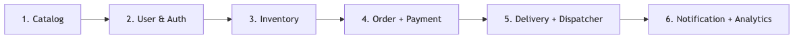
| Приоритет | Сервис | Риск | Обоснование |
|---|---|---|---|
| 1 | Catalog | Низкий | Read-only данные, нет мутаций от клиентов. Ошибка не приведёт к financial loss |
| 2 | User & Auth | Низкий | Независимый домен, минимум связей с другими таблицами |
| 3 | Inventory | Средний | Связан с Catalog, но SKU стабильны. Риск: расхождение остатков |
| 4 | Order + Payment | Высокий | Финансовые данные, Event Sourcing, самая сложная миграция. Любая ошибка = потеря денег |
| 5 | Delivery + Dispatcher | Средний | Зависит от Order. Активные доставки нельзя потерять |
| 6 | Notification, Analytics | Низкий | Не критично для бизнеса. Можно мигрировать последними |
2.14.2 Стратегия двойной записи (Double Write)
На этапе Double Write каждый сервис пишет одновременно в старую (монолит) и новую (микросервис) БД. Консистентность обеспечивается через Transactional Outbox:
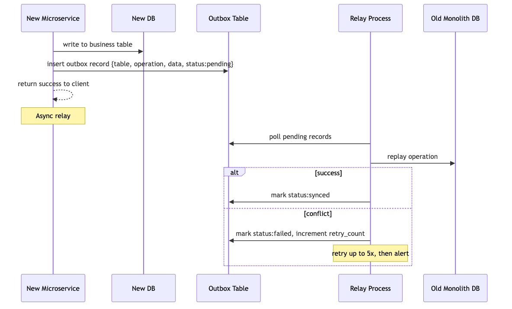
Reconciliation job:
- Запускается каждые 15 минут
- Сравнивает count, checksum, сумму ключевых полей между новой и старой БД
- При расхождении > 0.1% — автоматический алерт в PagerDuty/Slack
- При расхождении > 1% — автоматическая блокировка cut-over
-- Пример reconciliation-запроса:
SELECT COUNT(*), SUM(amount) FROM new_orders.orders WHERE created_at > now() - interval '15 minutes'
UNION ALL
SELECT COUNT(*), SUM(amount) FROM old_monolith.orders WHERE created_at > now() - interval '15 minutes';2.14.3 Cut-over критерии
Cut-over (переключение трафика на новый сервис) выполняется только при выполнении всех условий:
| Критерий | Метрика | Как проверяем |
|---|---|---|
| Расхождение данных | 0 расхождений за 7 дней | Reconciliation job |
| Нагрузочное тестирование | p95 < 500ms при 2x RPS | Load test в staging |
| Contract-тесты | 100% green | Pact / Spring Cloud Contract в CI |
| Rollback-план | Протестирован | Dry-run в staging |
| Graceful degradation | Старый сервис живёт в read-only | Feature flag use_new_{service} в LaunchDarkly |
Процедура cut-over:
- Полный бэкап старой и новой БД перед каждым шагом (см. §5.7 Backup & DR)
- Включить feature flag
use_new_{service}для 1% пользователей → 24h мониторинга - Расширить до 10% → 48h мониторинга
- Расширить до 50% → 72h мониторинга
- 100% — старый сервис в read-only на 7 дней (откат возможен без потери данных)
- Демонтаж старого сервиса после 7 дней без расхождений
Согласование с ПЛАН_ОПТИМИЗАЦИИ: порядок миграции соответствует §5 (Модульная миграция бизнес-логики), процедура canary-rollout — §6 (Canary-Release), полный переход и демонтаж — §7 (Полный переход и демонтаж старого монолита).
2.14.4 Rollback-план
Для каждого сервиса определён порядок отката:
| Сервис | Действие при откате | Что делаем с новыми данными |
|---|---|---|
| Catalog | Выключить use_new_catalog → трафик на монолит |
Новые данные копируются в монолит через reverse sync |
| User & Auth | Выключить use_new_user → трафик на монолит |
Новые сессии инвалидируются, пользователи переносятся reverse sync |
| Inventory | Выключить use_new_inventory → монолит |
Reverse sync + ручная сверка остатков |
| Order + Payment | Выключить use_new_order → новые заказы на монолит.
Активные заказы в новом сервисе доводятся до
завершения |
Event Sourcing позволяет восстановить все события |
| Delivery | Выключить use_new_delivery → новые назначения на
монолит. Активные доставки остаются в новом сервисе |
Reverse sync для завершённых доставок |
Reverse replication:
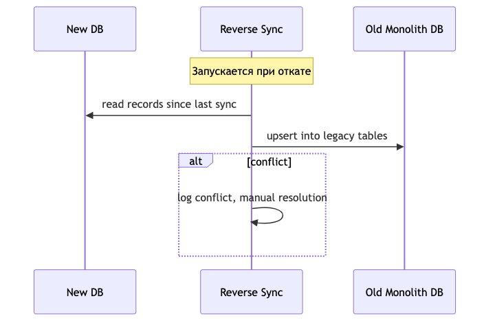
2.14.5 Миграция исторических данных
Backfill:
- Исторические данные переносятся batch-скриптами до начала Double Write
- Каждый batch: 10 000 записей, пауза 1 секунда между batch
- Ограничение по времени: не более 4 часов downtime (ночное окно)
Валидация после миграции:
| Проверка | Что проверяем | Допуск |
|---|---|---|
| Row count | Количество записей совпадает | 100% |
| Control sum | SUM ключевых числовых полей | 100% |
| Checksum | CRC32/MD5 конкатенации всех полей | 100% |
| Referential integrity | FK не нарушены | 0 нарушений |
| Sample check | Выборочная сверка 1% записей вручную | 0 ошибок |
Downtime окно:
- Catalog, User & Auth: zero-downtime (Double Write с первой записи)
- Inventory: zero-downtime
- Order + Payment: zero-downtime (Event Sourcing гарантирует консистентность)
- Исторические данные: downtime до 4 часов в ночное окно (02:00–06:00 MSK)
2.14.6 Таблица рисков и митигаций
| Риск | Вероятность | Влияние | Митигация |
|---|---|---|---|
| Расхождение данных при Double Write | Medium | High | Reconciliation каждые 15 мин, автоматический алерт |
| Потеря заказа при cut-over | Low | Critical | Event Sourcing + feature flag rollout |
| Отказ нового сервиса под нагрузкой | Medium | High | Load test до 2x RPS перед cut-over |
| Reverse sync не успевает за новыми данными | Low | Medium | Batch-режим + priority queue |
| Человеческая ошибка при переключении | Medium | Medium | Runbook + автоматизация через CI/CD |
| Блокировка старой БД при backfill | Medium | Medium | Batch с паузами, мониторинг lock-ов |
2.15 Rate Limits & Quotas
Политика rate limiting для защиты от злоупотреблений и равномерного распределения ресурсов. Согласовано с §1.3 NFR (RPS 50→500→5000), §1.5 Error Handling (матрица таймаутов) и §6.2 Data Protection.
2.15.1 Таблица лимитов по эндпоинтам
| Endpoint | Limit | Window | Burst | Почему |
|---|---|---|---|---|
GET /catalog/* |
300 | per user / min | 50 | Read-heavy — каталог грузится часто |
POST /orders |
5 | per user / min | 2 | Защита от дублей заказов |
POST /auth/sms |
3 | per phone / hour | 1 | Защита от SMS-спама |
POST /payments/* |
10 | per user / min | 2 | Финтех-защита |
GET /orders/history |
60 | per user / min | 10 | История заказов — частый просмотр |
POST /notifications/* |
20 | per user / min | 5 | Защита от спам-рассылок |
POST /auth/register |
5 | per IP / hour | 2 | Защита от накрутки аккаунтов |
PATCH /orders/{id}/cancel |
3 | per order / min | 1 | Предотвращение race condition |
POST /refunds |
3 | per user / day | 1 | Финансовая операция |
POST /deliveries/sync |
60 | per courier / min | 10 | Offline sync — может быть burst |
2.15.2 Лимиты по ролям
| Роль | Множитель | Базовый лимит (пример) |
|---|---|---|
| B2C (обычный пользователь) | ×1 | 5 POST/orders/min |
| B2B (корпоративные клиенты) | ×5 | 25 POST/orders/min |
| Admin (менеджеры) | ×10 | 50 POST/orders/min |
| Service-to-service | Отдельные лимиты | По согласованию, whitelist IP |
| Courier App | ×3 | 180 POST/deliveries/sync/min |
2.15.3 HTTP-ответ при превышении лимита
HTTP/1.1 429 Too Many Requests
Retry-After: 30
X-RateLimit-Limit: 5
X-RateLimit-Remaining: 0
X-RateLimit-Reset: 1718640000
Content-Type: application/json
{
"error": {
"code": "RATE_LIMIT_EXCEEDED",
"message": "Превышен лимит запросов. Попробуйте через 30 секунд",
"details": {
"limit": 5,
"window": "1 minute",
"retry_after_seconds": 30
},
"request_id": "req_def456"
}
}Заголовки соответствуют RFC 6585 / draft-ietf-httpapi-ratelimit-headers.
2.15.4 Реализация
| Компонент | Технология | Алгоритм |
|---|---|---|
| API Gateway | Nginx limit_req zone |
Token bucket (на уровне gateway — первая линия защиты) |
| Service-level | Redis + middleware | Sliding window log (на уровне сервиса — точные лимиты по user_id) |
| Распределённый счётчик | Redis INCR + EXPIRE | Atomic операции, TTL = размер окна |
Схема работы:
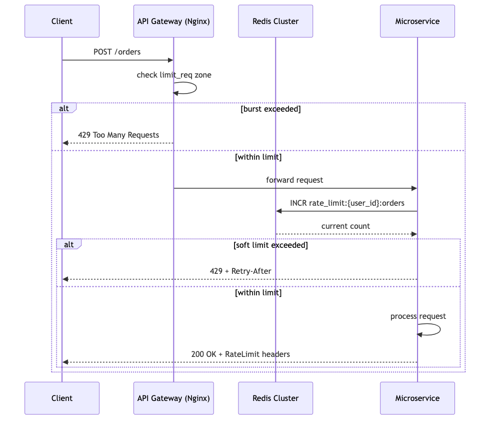
Whitelist:
- Внутренние сервисы (service-to-service) — обходят rate limiting
через header
X-Internal-Service: <secret> - Мониторинг (Prometheus, Sentry) — whitelist по IP
2.15.5 Burst-политика
| Сценарий | Механизм | Параметры |
|---|---|---|
| Распродажа (Black Friday) | Заранее увеличить burst-лимиты в 2× через админку | Feature flag burst_mode_bf |
| DDoS-атака | Включить строгий режим (лимиты ÷10) | Feature flag strict_rate_limit |
| Расширение пользовательской базы | Пересчёт лимитов при росте MAU > 20% | Ежеквартальный review |
| Ошибка мониторинга | Отдельный лимит для /health и /metrics:
60/min |
Не блокировать внутренние проверки |
Источник: Раздел 5.4 + пункт 5 общего списка.
Визуальная ER-диаграмма и ссылки на SQL-схемы.
Полные DDL-схемы вынесены в отдельные файлы:
- migrations/catalog.sql — §3.2 Catalog Schema
- migrations/orders_payments.sql — §3.3 Orders & Payments
- migrations/users_auth.sql — §3.4 Users & Auth
- migrations/delivery_dispatch.sql — §3.5 Delivery & Dispatch
- migrations/notifications_promotions.sql — §3.6 Notifications & Promotions
- db/schema.rb — сводная схема
3. Data Model
3.2 Catalog Schema (Архитектура хранения каталога)
Источник: Раздел 5.4 исходного документа.
-- Сеть (Лента, Metro, Вкусвилл...)
CREATE TABLE chains (
id SERIAL PRIMARY KEY,
name TEXT NOT NULL,
slug TEXT UNIQUE,
logo_url TEXT,
created_at TIMESTAMPTZ DEFAULT NOW()
);
-- Конкретный магазин сети
CREATE TABLE stores (
id SERIAL PRIMARY KEY,
chain_id INTEGER REFERENCES chains(id),
name TEXT NOT NULL,
address TEXT,
location GEOGRAPHY(POINT),
working_hours JSONB,
is_active BOOLEAN DEFAULT TRUE
);
-- Зона доставки магазина (полигон на карте)
CREATE TABLE delivery_zones (
id SERIAL PRIMARY KEY,
store_id INTEGER REFERENCES stores(id),
polygon GEOGRAPHY(POLYGON),
min_order_amount NUMERIC,
delivery_fee NUMERIC
);
-- Товар (единица ассортимента сети)
CREATE TABLE chain_products (
id SERIAL PRIMARY KEY,
chain_id INTEGER REFERENCES chains(id),
sku TEXT,
barcode TEXT,
name TEXT NOT NULL,
brand TEXT,
category_path TEXT[],
unit TEXT,
price NUMERIC,
old_price NUMERIC,
image_url TEXT,
attributes JSONB,
is_alcohol BOOLEAN DEFAULT FALSE,
is_active BOOLEAN DEFAULT TRUE,
UNIQUE(chain_id, sku)
);
-- Цена товара в конкретном магазине
CREATE TABLE store_prices (
id SERIAL PRIMARY KEY,
store_id INTEGER REFERENCES stores(id),
chain_product_id INTEGER REFERENCES chain_products(id),
price NUMERIC NOT NULL,
old_price NUMERIC,
quantity INTEGER,
updated_at TIMESTAMPTZ DEFAULT NOW(),
UNIQUE(store_id, chain_product_id)
);
-- Категория в каталоге платформы (наши, не сети)
CREATE TABLE categories (
id SERIAL PRIMARY KEY,
parent_id INTEGER REFERENCES categories(id),
name TEXT NOT NULL,
icon_url TEXT,
sort_order INTEGER DEFAULT 0,
price_from NUMERIC, -- минимальная цена товара в категории (для фильтрации)
price_to NUMERIC -- максимальная цена товара в категории
);
-- Привязка товара сети к категории платформы
CREATE TABLE product_category_mappings (
id SERIAL PRIMARY KEY,
chain_product_id INTEGER REFERENCES chain_products(id),
category_id INTEGER REFERENCES categories(id),
UNIQUE(chain_product_id, category_id)
);
-- Фильтры категории (динамические)
CREATE TABLE category_filters (
id SERIAL PRIMARY KEY,
category_id INTEGER REFERENCES categories(id),
filter_name TEXT NOT NULL,
sort_order INTEGER DEFAULT 0
);
CREATE TABLE filter_values (
id SERIAL PRIMARY KEY,
filter_id INTEGER REFERENCES category_filters(id),
value_name TEXT NOT NULL,
sort_order INTEGER DEFAULT 0
);3.3 Orders & Payments Schema
Источник: BP-03, BP-04, BP-07 исходного документа.
-- Корзина (временное хранение, Redis или PG)
CREATE TABLE carts (
id SERIAL PRIMARY KEY,
user_id INTEGER NOT NULL,
store_id INTEGER REFERENCES stores(id),
items JSONB NOT NULL DEFAULT '[]',
promo_code TEXT,
created_at TIMESTAMPTZ DEFAULT NOW(),
updated_at TIMESTAMPTZ DEFAULT NOW()
);
-- Заказ
CREATE TABLE orders (
id SERIAL PRIMARY KEY,
user_id INTEGER NOT NULL,
store_id INTEGER REFERENCES stores(id),
status TEXT NOT NULL DEFAULT 'pending',
-- Статусы: pending → paid → picking → packed → delivering → delivered
-- cancelled, refunded
total NUMERIC NOT NULL,
delivery_fee NUMERIC NOT NULL DEFAULT 0,
service_fee NUMERIC NOT NULL DEFAULT 0,
weight_kg NUMERIC,
delivery_address TEXT NOT NULL,
delivery_lat NUMERIC,
delivery_lng NUMERIC,
payment_method TEXT NOT NULL,
delivery_slot_date DATE,
delivery_slot_start TIME,
delivery_slot_end TIME,
comment TEXT,
substituted BOOLEAN DEFAULT FALSE,
created_at TIMESTAMPTZ DEFAULT NOW(),
updated_at TIMESTAMPTZ DEFAULT NOW()
);
CREATE INDEX idx_orders_user_id ON orders(user_id);
CREATE INDEX idx_orders_status ON orders(status);
CREATE INDEX idx_orders_store_id ON orders(store_id);
-- Позиции заказа
CREATE TABLE order_items (
id SERIAL PRIMARY KEY,
order_id INTEGER REFERENCES orders(id) ON DELETE CASCADE,
product_id INTEGER REFERENCES chain_products(id),
quantity NUMERIC NOT NULL,
price NUMERIC NOT NULL,
substituted BOOLEAN DEFAULT FALSE,
substituted_from_id INTEGER REFERENCES order_items(id),
picked BOOLEAN DEFAULT FALSE,
UNIQUE(order_id, product_id)
);
-- Платежи
CREATE TABLE payments (
id SERIAL PRIMARY KEY,
order_id INTEGER REFERENCES orders(id),
amount NUMERIC NOT NULL,
status TEXT NOT NULL DEFAULT 'pending',
-- Статусы: pending → succeeded → failed → refunded
provider TEXT NOT NULL,
provider_payment_id TEXT,
created_at TIMESTAMPTZ DEFAULT NOW(),
updated_at TIMESTAMPTZ DEFAULT NOW()
);
-- Возвраты
CREATE TABLE refunds (
id SERIAL PRIMARY KEY,
payment_id INTEGER REFERENCES payments(id),
amount NUMERIC NOT NULL,
reason TEXT,
status TEXT NOT NULL DEFAULT 'pending',
created_at TIMESTAMPTZ DEFAULT NOW()
);
-- Event store (аудит заказа, Event Sourcing)
CREATE TABLE order_events (
id SERIAL PRIMARY KEY,
order_id INTEGER REFERENCES orders(id),
event_type TEXT NOT NULL,
-- 'order.created', 'payment.received', 'picker.assigned',
-- 'picking.started', 'picking.completed', 'courier.assigned',
-- 'delivery.started', 'delivery.completed', 'order.cancelled'
payload JSONB NOT NULL,
created_at TIMESTAMPTZ DEFAULT NOW()
);
CREATE INDEX idx_order_events_order_id ON order_events(order_id);3.4 Users & Auth Schema
Источник: BP-01, Раздел 5.13 исходного документа.
CREATE TYPE user_role AS ENUM ('customer', 'picker', 'courier', 'manager', 'super_admin');
-- Пользователи
CREATE TABLE users (
id SERIAL PRIMARY KEY,
phone TEXT UNIQUE NOT NULL,
phone_verified BOOLEAN DEFAULT FALSE,
email TEXT,
name TEXT,
role user_role NOT NULL DEFAULT 'customer',
-- ПДн шифруются (AES-256) на уровне приложения
encrypted_phone TEXT,
encrypted_email TEXT,
is_blocked BOOLEAN DEFAULT FALSE,
blocked_until TIMESTAMPTZ,
created_at TIMESTAMPTZ DEFAULT NOW(),
updated_at TIMESTAMPTZ DEFAULT NOW()
);
CREATE INDEX idx_users_phone ON users(phone);
CREATE INDEX idx_users_role ON users(role);
-- Сессии (refresh token rotation)
CREATE TABLE sessions (
id SERIAL PRIMARY KEY,
user_id INTEGER REFERENCES users(id) ON DELETE CASCADE,
refresh_token TEXT UNIQUE NOT NULL,
device_info TEXT,
ip_address INET,
expires_at TIMESTAMPTZ NOT NULL,
revoked BOOLEAN DEFAULT FALSE,
created_at TIMESTAMPTZ DEFAULT NOW()
);
CREATE INDEX idx_sessions_user_id ON sessions(user_id);
-- Audit log (критические действия)
CREATE TABLE audit_log (
id SERIAL PRIMARY KEY,
user_id INTEGER REFERENCES users(id),
action TEXT NOT NULL,
-- 'user.login', 'order.cancel', 'order.status_change',
-- 'user.role_change', 'payment.refund', 'admin.action'
entity_type TEXT,
entity_id INTEGER,
details JSONB,
ip_address INET,
created_at TIMESTAMPTZ DEFAULT NOW()
);
CREATE INDEX idx_audit_log_user_id ON audit_log(user_id);
CREATE INDEX idx_audit_log_action ON audit_log(action);
CREATE INDEX idx_audit_log_created_at ON audit_log(created_at);3.5 Delivery & Dispatch Schema
Источник: BP-06, BP-13 исходного документа.
-- Курьер
CREATE TABLE couriers (
id SERIAL PRIMARY KEY,
user_id INTEGER UNIQUE REFERENCES users(id),
status TEXT NOT NULL DEFAULT 'offline',
-- Статусы: offline, free, busy, on_break
current_location GEOGRAPHY(POINT),
last_location_update TIMESTAMPTZ,
vehicle_type TEXT DEFAULT 'car',
zone_id INTEGER REFERENCES delivery_zones(id),
max_weight_kg NUMERIC DEFAULT 80,
shift_start TIME,
shift_end TIME,
rating NUMERIC DEFAULT 5.0,
created_at TIMESTAMPTZ DEFAULT NOW()
);
CREATE INDEX idx_couriers_status ON couriers(status);
CREATE INDEX idx_couriers_location ON couriers USING GIST(current_location);
-- Доставка
CREATE TABLE deliveries (
id SERIAL PRIMARY KEY,
order_id INTEGER UNIQUE REFERENCES orders(id),
courier_id INTEGER REFERENCES couriers(id),
status TEXT NOT NULL DEFAULT 'pending',
-- Статусы: pending → assigned → picking_up → in_transit → delivered
-- failed, returned
assigned_at TIMESTAMPTZ,
picked_up_at TIMESTAMPTZ,
delivered_at TIMESTAMPTZ,
eta_seconds INTEGER,
eta_updated_at TIMESTAMPTZ,
distance_meters INTEGER,
courier_note TEXT,
client_signature TEXT,
photo_pod_url TEXT,
created_at TIMESTAMPTZ DEFAULT NOW()
);
CREATE INDEX idx_deliveries_courier_id ON deliveries(courier_id);
CREATE INDEX idx_deliveries_status ON deliveries(status);
-- B2B компании
CREATE TABLE b2b_companies (
id SERIAL PRIMARY KEY,
name TEXT NOT NULL,
inn TEXT UNIQUE NOT NULL,
kpp TEXT,
legal_address TEXT,
actual_address TEXT,
credit_limit NUMERIC,
payment_deferral_days INTEGER DEFAULT 0,
contract_number TEXT,
contract_date DATE,
edo_provider TEXT, -- 'diadoc' / 'sbis'
is_active BOOLEAN DEFAULT TRUE,
created_at TIMESTAMPTZ DEFAULT NOW()
);
-- Индивидуальные цены для B2B
CREATE TABLE b2b_prices (
id SERIAL PRIMARY KEY,
company_id INTEGER REFERENCES b2b_companies(id),
product_id INTEGER REFERENCES chain_products(id),
price NUMERIC NOT NULL,
valid_from DATE NOT NULL,
valid_until DATE,
UNIQUE(company_id, product_id, valid_from)
);
-- B2B заказы
CREATE TABLE b2b_orders (
id SERIAL PRIMARY KEY,
order_id INTEGER UNIQUE REFERENCES orders(id),
company_id INTEGER REFERENCES b2b_companies(id),
po_number TEXT,
delivery_note TEXT,
invoice_url TEXT,
upd_url TEXT,
created_at TIMESTAMPTZ DEFAULT NOW()
);3.6 Notifications & Promotions Schema
Источник: BP-08, BP-09 исходного документа.
-- Уведомления
CREATE TABLE notifications (
id SERIAL PRIMARY KEY,
user_id INTEGER REFERENCES users(id),
channel TEXT NOT NULL, -- 'push', 'sms', 'email', 'telegram'
event_type TEXT NOT NULL,
-- 'order.created', 'payment.succeeded', 'delivery.assigned',
-- 'delivery.delivered', 'promo.received', 'order.reminder'
title TEXT,
body TEXT NOT NULL,
payload JSONB,
status TEXT NOT NULL DEFAULT 'pending',
-- Статусы: pending → sent → delivered → failed
sent_at TIMESTAMPTZ,
read_at TIMESTAMPTZ,
created_at TIMESTAMPTZ DEFAULT NOW()
);
CREATE INDEX idx_notifications_user_id ON notifications(user_id);
CREATE INDEX idx_notifications_status ON notifications(status);
-- Промокоды
CREATE TABLE promo_codes (
id SERIAL PRIMARY KEY,
code TEXT UNIQUE NOT NULL,
type TEXT NOT NULL, -- 'percent', 'fixed', 'free_delivery'
value NUMERIC NOT NULL,
max_uses INTEGER,
used_count INTEGER DEFAULT 0,
min_order_amount NUMERIC,
max_discount NUMERIC,
category_ids INTEGER[],
first_order_only BOOLEAN DEFAULT FALSE,
expires_at TIMESTAMPTZ,
is_active BOOLEAN DEFAULT TRUE,
created_at TIMESTAMPTZ DEFAULT NOW()
);
-- Использование промокодов
CREATE TABLE promo_code_uses (
id SERIAL PRIMARY KEY,
promo_code_id INTEGER REFERENCES promo_codes(id),
order_id INTEGER REFERENCES orders(id),
user_id INTEGER REFERENCES users(id),
discount_amount NUMERIC NOT NULL,
created_at TIMESTAMPTZ DEFAULT NOW()
);
-- Баллы лояльности
CREATE TABLE loyalty_points (
id SERIAL PRIMARY KEY,
user_id INTEGER UNIQUE REFERENCES users(id),
balance NUMERIC NOT NULL DEFAULT 0,
lifetime_earned NUMERIC DEFAULT 0,
lifetime_spent NUMERIC DEFAULT 0,
updated_at TIMESTAMPTZ DEFAULT NOW()
);
-- Транзакции баллов
CREATE TABLE loyalty_transactions (
id SERIAL PRIMARY KEY,
user_id INTEGER REFERENCES users(id),
type TEXT NOT NULL, -- 'earn', 'spend', 'expire', 'refund'
amount NUMERIC NOT NULL,
order_id INTEGER REFERENCES orders(id),
description TEXT,
created_at TIMESTAMPTZ DEFAULT NOW()
);4. Functional Requirements (Функциональные требования)
Каждый процесс описан по шаблону: триггер → шаги → данные → UI → интеграции → бизнес-правила → технические заметки → оценка.
Источник: Раздел 2.2 исходного документа.
4.1 Customer Domain (Клиент)
Источник: Раздел 2.2 исходного документа.
BP-01: Регистрация и аутентификация (14 чел.-дней)
User Story: Как новый клиент, Я хочу зарегистрироваться по номеру телефона через SMS-код, Чтобы начать заказывать без запоминания паролей.
Acceptance Criteria: Дано: Я нахожусь на экране регистрации Когда: Я ввожу действительный номер телефона +7XXXXXXXXXX Тогда: Система отправляет 4-значный SMS-код в течение 10 секунд И Код истекает через 5 минут
Дано: Я ввёл неправильный SMS-код 3 раза Когда: Я пытаюсь ввести 4-й раз Тогда: Мой номер блокируется на 30 минут И Я вижу чёткое сообщение со временем разблокировки
Дано: Я вернувшийся пользователь с существующим аккаунтом Когда: Я ввожу свой номер телефона Тогда: Система распознаёт мой аккаунт и выполняет вход после SMS-подтверждения И Мне не нужно повторно вводить данные профиля
Ссылки: → State Machine: §2.10 State Machine Diagrams → Sequence Diagram: §2.11 Sequence Diagrams → API endpoint: §2.7 API Versioning & Error Code Standard
Триггер: Пользователь открывает приложение / сайт
Бизнес-шаги:
- Ввод номера телефона — Пользователь вводит номер в поле ввода (формат: +7XXXXXXXXXX)
- Отправка SMS с кодом — Система генерирует 4-значный код, отправляет через SMS-провайдера (код жив 5 минут, 3 попытки ввода)
- Подтверждение кода — Пользователь вводит код из SMS (при 3 неверных — блокировка на 30 мин)
- Создание/поиск профиля — Если номер новый → создаётся профиль, если существующий → вход
- Выдача токена — Система выдаёт JWT access + refresh токены (access — 15 мин, refresh — 30 дней)
Данные процесса:
users: id, phone, name, email, role, created_at, updated_atsessions: id, user_id, refresh_token, expires_at, device_info
UI / Интерфейсы:
- Экран ввода номера
- Экран ввода SMS-кода
- Экран профиля (после регистрации)
Интеграции:
- SMS-провайдер (телефон, текст сообщения)
Бизнес-правила:
- Если пользователь не завершил регистрацию (не ввёл код) — номер считается незанятым
- Один номер — один аккаунт
- Админы создаются только через бэк-офис
Технические заметки:
- JWT access token (15 мин) + refresh token (30 дней, rotation)
- Rate limit: 3 запроса SMS/мин на номер
- Блокировка номера на 30 мин после 3 неверных попыток ввода кода
Оценка:
| Команда | Дней |
|---|---|
| Backend | 5 |
| Frontend | 3 |
| Mobile | 4 |
| QA | 2 |
| Итого | 14 |
BP-02: Каталог и поиск товаров (28 чел.-дней)
User Story: Как покупатель, Я хочу просматривать товары по категориям, искать по названию и применять фильтры, Чтобы быстро находить нужные мне товары.
Acceptance Criteria: Дано: Я нахожусь на странице каталога Когда: Я выбираю категорию Тогда: Я вижу постраничный список товаров в этой категории И Каждая карточка товара показывает название, цену, вес и изображение
Дано: Я ввожу поисковый запрос Когда: Система выполняет поиск по названию товара и бренду Тогда: Я вижу соответствующие результаты в течение 2 секунд И Неподходящие товары исключаются
Дано: Я применяю фильтр (например, бренд или ценовой диапазон) Когда: Каталог обновляется Тогда: Показываются только товары, соответствующие фильтру И Опции фильтра динамически обновляются на основе доступных товаров
Ссылки: → State Machine: §2.10 State Machine Diagrams → Sequence Diagram: §2.11 Sequence Diagrams → API endpoint: §2.7 API Versioning & Error Code Standard
Триггер: Пользователь открывает каталог / вводит поисковый запрос
Бизнес-шаги:
- Выбор магазина — Пользователь вводит адрес → система показывает доступные магазины (магазины определяются по зоне доставки адреса)
- Открытие каталога — Пользователь выбирает категорию из списка (категории — дерево, 3 уровня: корневая → подкатегория → товары)
- Загрузка товаров — Система выполняет запрос к БД / кэшу (пагинация)
- Фильтрация — Пользователь выбирает фильтры (тип, бренд, цена, жирность и т.д.) (фильтры зависят от категории, динамические)
- Поиск — Пользователь вводит текст поиска (поиск по названию, бренду)
- Отображение — Система показывает карточки товаров с ценой и фото (фото с Selectel CDN)
Данные процесса:
categories: id, parent_id, name, icon_path, sort_ordercategory_filters: id, category_id, filter_name (например «Вид овоща», «Жирность», «Бренд»)filter_values: id, filter_id, value_name (например «Томаты», «Valio», «20%»)products: id, name, sku, barcode, price, old_price, category_id, images, attributes (JSONB)stores: id, name, chain_id, address, coordinates, working_hoursstore_inventory: store_id, product_id, quantity
Структура фильтров:
- Фильтры привязаны к категории, а не глобальные
- Пример для «Молоко и сливки»: Тип (молоко/сливки/козье), Обработка (стерилизованное/УВТ/пастеризованное), Жирность (0–40%), Фермерский продукт, Бренд
- Пример для «Овощи»: Вид овоща (томаты/перец/лук/…), Томаты (сливовидные/черри/…), Бренд
Источник данных о товарах:
- Цены и ассортимент получаются от сетей супермаркетов (API или парсинг)
- Актуальность остатков — не гарантирована, пикер проверяет в магазине
UI / Интерфейсы:
- Главная страница каталога (корневые категории с иконками)
- Список товаров (плитка/список, фото, цена, вес)
- Детальная карточка товара
- Поисковая строка
- Фильтры: сайдбар / выезжающая панель
Бизнес-правила:
- Цена = базовая цена сети - скидка (если есть акция/промокод)
- Наличие — не гарантируется до фактической сборки пикером
- Если товара нет в магазине — пикер звонит клиенту с вариантами замены
- Алкоголь и сигареты не доставляются (законодательный запрет)
Технические заметки:
- Фото товаров хранятся на Selectel CDN
- Пагинация списка товаров
- Фильтры динамические, зависят от категории
- Данные о ценах и ассортименте — внешние, от сетей супермаркетов (API или парсинг)
Оценка:
| Команда | Дней |
|---|---|
| Backend | 10 |
| Frontend | 6 |
| Mobile | 8 |
| QA | 4 |
| Итого | 28 |
BP-03: Оформление заказа (Корзина → Заказ) (34 чел.-дней)
User Story: Как покупатель, Я хочу добавлять товары в корзину, выбирать параметры доставки и оформлять заказ, Чтобы мои продукты были доставлены по моему адресу.
Acceptance Criteria: Дано: У меня есть товары в корзине Когда: Я перехожу к оформлению заказа Тогда: Я могу выбрать адрес доставки, временной слот и способ оплаты И Я вижу итоговую сумму, включая стоимость доставки
Дано: Я ввёл действительный промокод Когда: Я применяю его Тогда: Скидка отражается в итоговой сумме заказа И Сумма со скидкой показана чётко
Дано: Я нажимаю «Оформить заказ» Когда: Система создаёт заказ Тогда: Статус заказа устанавливается «Ожидает оплаты» (онлайн) или «Принят» (наличные) И Я получаю подтверждение на экране
Ссылки: → State Machine: §2.10 State Machine Diagrams → Sequence Diagram: §2.11 Sequence Diagrams → API endpoint: §2.7 API Versioning & Error Code Standard
Триггер: Пользователь выбирает товары и переходит к оформлению
Бизнес-шаги:
- Выбор магазина — Система автоматически выбирает магазин по адресу (клиент может сменить магазин вручную)
- Добавление товаров — Пользователь выбирает товары из каталога (можно добавить в заказ после оформления, пока сборка не началась)
- Применение промокода / баллов — Пользователь вводит промокод (скидка не суммируется с другими акциями)
- Выбор временного слота — Пользователь выбирает дату (сегодня/завтра/+3 дня) и интервал (слоты зависят от магазина и загрузки курьеров)
- Выбор адреса доставки — Пользователь вводит или выбирает сохранённый (геокодирование, проверка попадания в зону доставки)
- Выбор способа оплаты — Пользователь выбирает онлайн / СБП / картой курьеру / наличные
- Подтверждение — Пользователь нажимает «Оформить заказ» (рассчитывается стоимость сборки и доставки)
- Создание заказа — Система переводит статус в «Ожидает оплаты» (для онлайн) или «Принят» (для наличных)
Особенность: нет резервирования товаров при добавлении в корзину. Товар резервируется только после создания заказа. Актуальное наличие проверяет пикер в магазине.
Данные процесса:
carts: id, user_id, store_id, items (JSONB), created_at, updated_atorders: id, user_id, store_id, status, total, delivery_fee, service_fee, delivery_address, payment_method, delivery_slot, weight, comment, created_atorder_items: id, order_id, product_id, quantity, price, substituted (если замена), substituted_from_idpromo_codes: id, code, type (percent/fixed/delivery), value, max_uses, used_count, min_order_amount, expires_atloyalty_points: id, user_id, balance
UI / Интерфейсы:
- Экран корзины (товары, количество, сумма, промокод)
- Экран оформления (адрес, слот, оплата)
- Экран подтверждения заказа
- Опция «Можно раньше» — согласие на более раннюю доставку
Интеграции:
- Геокодер (Яндекс.Карты) — адрес → координаты, проверка зоны доставки
- Telegram bot поддержки — изменение заказа
Бизнес-правила:
- Максимальный вес заказа: 80 кг
- Доставка бесплатна от определённой суммы (настраивается для каждого магазина)
- Можно заказать на сегодня, завтра или на 3 дня вперёд
- После оформления можно добавить товары кнопкой «В заказ» (до начала сборки)
- Время доставки: 10:00–22:00 (МСК)
- Стоимость сборки и доставки рассчитывается перед подтверждением
- Скидка по промокоду не суммируется с другими акциями
Технические заметки:
- Корзина хранится в JSONB, товары не резервируются до создания заказа
- Геокодирование через Яндекс.Карты
- Telegram bot для поддержки
- Вес заказа ограничен 80 кг
Оценка:
| Команда | Дней |
|---|---|
| Backend | 12 |
| Frontend | 8 |
| Mobile | 10 |
| QA | 4 |
| Итого | 34 |
BP-04: Оплата заказа (26 чел.-дней)
User Story: Как покупатель, Я хочу оплатить заказ онлайн банковской картой или через СБП, Чтобы заказ был подтверждён и обработан.
Acceptance Criteria: Дано: Я выбираю онлайн-оплату картой Когда: Я перенаправляюсь на платёжный шлюз Т-Банка Тогда: Мои данные карты вводятся на странице банка (не на нашем сервере) И После успешного 3DSecure статус заказа меняется на «Оплачен»
Дано: Банк отклоняет мой платёж Когда: Я получаю уведомление об ошибке Тогда: Заказ остаётся в статусе «Ожидает оплаты» И Я могу выбрать другой способ оплаты или повторить попытку
Дано: Я выбираю оплату наличными при доставке Когда: Курьер прибывает Тогда: Я могу оплатить наличными и получить сдачу И Заказ отмечается как доставленный
Ссылки: → State Machine: §2.10 State Machine Diagrams → Sequence Diagram: §2.11 Sequence Diagrams → API endpoint: §2.7 API Versioning & Error Code Standard
Триггер: Заказ создан со статусом «Ожидает оплаты»
Бизнес-шаги:
- Перенаправление на платёжный шлюз — Система формирует ссылку на оплату (разные ссылки для разных банков)
- Ввод данных карты — Пользователь вводит номер, срок, CVV (данные не проходят через наш сервер)
- Обработка платежа — Банк списывает средства (3DSecure при необходимости)
- Callback от банка — Система получает уведомление об успехе/отказе (webhook + polling)
- Обновление статуса заказа — Успех → «Оплачен», отказ → ошибка пользователю
Данные процесса:
payments: id, order_id, amount, status, provider, provider_payment_id, created_atrefunds: id, payment_id, amount, reason, status
Интеграции:
- Т-Банк (Тинькофф) — сумма, order_id, success_url, fail_url → payment_url (основной шлюз)
- СБП — QR-код генерируется курьером при получении (вторичный)
- Карта курьеру — POS-терминал курьера (offline)
- Наличные — при получении (offline)
Подтверждено: > «Для оплаты необходимо ввести реквизиты карты. Для этого мы перенаправим вас на платёжный шлюз банка Тинькофф. Соединение с платёжным шлюзом и передача информации осуществляется в защищённом режиме с использованием протокола шифрования SSL.» > «Во время доставки курьер создаст для вас QR-код. Считайте его смартфоном и подтвердите операцию в приложении вашего банка.»
Бизнес-правила:
- Онлайн-оплата: перенаправление на шлюз Т-Банка, 3DSecure
- СБП: QR-код от курьера при получении, оплата через приложение банка
- Карта курьеру: POS-терминал на месте
- Наличные: оплата при получении, курьер выдаёт сдачу
- Электронный чек приходит на телефон/email
- Добавление карты: холд 1 руб. для проверки платежеспособности
- Полная стоимость списывается после получения и проверки заказа
- Refund: полный или частичный (по запросу менеджера)
Технические заметки:
- Webhook + polling для получения callback от банка
- Данные карты не проходят через сервер (PCI DSS compliance)
- Поддержка 3DSecure
Оценка:
| Команда | Дней |
|---|---|
| Backend | 15 |
| Frontend | 3 |
| Mobile | 3 |
| QA | 5 |
| Итого | 26 |
BP-10: Личный кабинет и история заказов (13 чел.-дней)
User Story: Как покупатель, Я хочу просматривать свой профиль, историю заказов и управлять адресами, Чтобы отслеживать свою активность и поддерживать информацию в актуальном состоянии.
Acceptance Criteria: Дано: Я авторизован и нахожусь на странице профиля Когда: Я просматриваю историю заказов Тогда: Я вижу постраничный список всех моих заказов со статусом, датой и суммой И Я могу фильтровать по статусу заказа
Дано: Я хочу отредактировать свои личные данные Когда: Я изменяю имя или email Тогда: Изменения сохраняются немедленно И Мой профиль отображает обновлённую информацию
Дано: У меня нет прошлых заказов Когда: Я открываю историю заказов Тогда: Я вижу сообщение, что история заказов пуста И Кнопку призыва к действию для начала покупок
Ссылки: → State Machine: §2.10 State Machine Diagrams → Sequence Diagram: §2.11 Sequence Diagrams → API endpoint: §2.7 API Versioning & Error Code Standard
Триггер: Пользователь заходит в профиль
Бизнес-шаги:
- Просмотр/редактирование профиля — Пользователь просматривает и редактирует имя, телефон, email
- Просмотр истории заказов — Пользователь просматривает список заказов с пагинацией и фильтром по статусу
- Просмотр деталей заказа — Пользователь просматривает товары, статус, трекинг
- Управление адресами — Пользователь просматривает и управляет сохранёнными адресами доставки
- Избранное / Wishlist — Пользователь управляет списком избранных товаров
Данные процесса:
users: id, phone, name, email, role, created_at, updated_at (профиль)orders: id, user_id, store_id, status, total, delivery_address, delivery_slot, created_at (история)addresses: id, user_id, address, coordinates, label, is_defaultwishlist: id, user_id, product_id, created_at
UI / Интерфейсы:
- Страница профиля (имя, телефон, email)
- Список заказов (пагинация, фильтр по статусу)
- Детали заказа (товары, статус, трекинг)
- Сохранённые адреса доставки
- Избранное / Wishlist
Бизнес-правила:
- Пользователь может редактировать только свои данные
- История заказов доступна за всё время
- Удаление аккаунта — через поддержку
Технические заметки:
- Пагинация списка заказов
- Фильтрация по статусу заказа
Оценка:
| Команда | Дней |
|---|---|
| Backend | 4 |
| Frontend | 3 |
| Mobile | 4 |
| QA | 2 |
| Итого | 13 |
4.2 Picker Domain (Пикер)
Источник: Раздел 2.2 исходного документа.
BP-05: Сборка и упаковка заказа (21 чел.-дней)
User Story: Как пикер, Я хочу получать задания на сборку, сканировать товары, обрабатывать замены и упаковывать заказы, Чтобы клиенты получали точные и свежие продукты.
Acceptance Criteria: Дано: Я получаю новое задание на сборку в приложении пикера Когда: Я открываю заказ Тогда: Я вижу список товаров с названием, количеством и расположением в магазине И Я могу сканировать штрихкоды для подтверждения каждого товара
Дано: Товара нет в наличии Когда: Я отмечаю его как недоступный Тогда: Система предлагает до 5 альтернативных товаров из той же категории И Я могу позвонить клиенту для подтверждения замены
Дано: Я собрал и упаковал все товары Когда: Я подтверждаю готовность заказа Тогда: Статус меняется на «Готов к доставке» И Заказ появляется в очереди курьера
Ссылки: → State Machine: §2.10 State Machine Diagrams → Sequence Diagram: §2.11 Sequence Diagrams → API endpoint: §2.7 API Versioning & Error Code Standard
Триггер: Заказ оплачен / подтверждён
Бизнес-шаги:
- Поступление заказа пикеру — Система отправляет заказ в приложение пикера (FIFO)
- Сборка товаров в зале — Пикер идёт по списку, отбирает товары с полок (выбирает самые свежие, целые яйца, лучшие овощи/фрукты)
- Проверка наличия — Пикер сверяет товар с заказом (если товара нет → звонит клиенту, предлагает замену)
- Замена товара — Пикер предлагает альтернативу, клиент соглашается или отказывается (замена фиксируется в системе)
- Упаковка — Пикер фасует по пакетам, термосумкам, контейнерам (соблюдение товарного соседства: мясо отдельно, химия отдельно)
- Передача курьеру — Упакованный заказ передаётся курьеру (статус → «Передан в доставку»)
Особенность: сборка происходит в торговом зале супермаркета (не на складе). Пикеры работают непосредственно в гипермаркетах.
Сценарий замены товара (поэтапно):
- Обнаружение отсутствия — Пикер нажимает «Нет в наличии» (система проверяет альтернативы в этом магазине)
- Поиск альтернатив — Система ищет товары той же категории, того же бренда, аналогичной цены (приоритет: тот же бренд → та же категория → ближайшая цена)
- Предложение замен — Система показывает пикеру список альтернатив до 5 (каждая с ценой, весом, фото)
- Звонок клиенту — Пикер звонит клиенту через встроенный звонок (скрытый номер)
- Выбор альтернативы — Клиент соглашается на одну из предложенных или просит другую
- Фиксация замены — Замена записывается в
order_items.substituted_from_id(цена замены может отличаться) - Отказ от замены — Клиент отказывается от товара (товар исключается из заказа, стоимость пересчитывается)
Особенности замены:
- Если клиент не берёт трубку — пикер оставляет товар в заказе (без замены), клиент может отказаться при получении
- Замена возможна только на товары в наличии в этом магазине (проверка по последней синхронизации)
- Цена замены фиксируется в момент согласия клиента (не меняется при пересчёте корзины)
Данные процесса:
orders: id, user_id, store_id, status, total, items (JSONB)order_items: id, order_id, product_id, quantity, price, substituted, substituted_from_idstore_inventory: store_id, product_id, quantity
UI (внутреннее приложение пикера):
- Список заказов на сборку
- Детали заказа со списком товаров
- Сканер штрихкодов
- Интерфейс замены товара (выбор альтернативы, звонок клиенту)
- Подтверждение упаковки
Бизнес-правила:
- Пикер отбирает товары максимально свежие (молоко/яйца — из глубины полки)
- При отсутствии товара → обязательный звонок клиенту
- Упаковка: термосумки для заморозки, отдельно для химии, хрупкое отдельно
- Опция «Меньше пакетов» — экологичная упаковка
Технические заметки (архитектура приложения пикера):
- Архитектура: Feature-first (models/screens/state/widgets)
- State management: Provider
- Build flavors: dev, dev_gooods, prod, prod_gooods
- Real-time: Cloud Firestore listeners (push)
- Offline: Firestore offline persistence
- Сканер штрихкодов: Scandit (scandit_flutter_datacapture_barcode)
- Локальное хранение: Firestore cache (SQLite)
- Backend: Firebase (Auth, Firestore, Crashlytics, Analytics, App Check)
- CI/CD: GitHub Actions — dev на tag push, prod вручную
Сценарии работы пикера в офлайне:
- Нет интернета в подвале супермаркета — последний загруженный заказ остаётся на экране, сканер работает локально, отметки о сборке ставятся в local queue
- Восстановление связи — queue синхронизируется с сервером (batch update), дубли разрешаются по updated_at
- Замена товара — пикер звонит клиенту напрямую (голосовая связь, не требует интернета), после подтверждения вводит замену — данные попадают в queue
Оценка:
| Команда | Дней |
|---|---|
| Backend (API для пикера) | 8 |
| Mobile (приложение пикера) | 10 |
| QA | 3 |
| Итого | 21 |
4.3 Courier Domain (Курьер)
Источник: Раздел 2.2 исходного документа.
BP-06: Доставка заказа (29 чел.-дней)
User Story: Как курьер, Я хочу получать задания на доставку с навигацией, принимать оплату и подтверждать доставку, Чтобы заказы доставлялись клиентам вовремя. Как клиент, Я хочу отслеживать свою доставку в реальном времени, Чтобы знать, когда ожидать мой заказ.
Acceptance Criteria: Дано: Я курьер, которому назначена новая доставка Когда: Я просматриваю задание в приложении курьера Тогда: Я вижу магазин для получения, адрес клиента, ETA и вес заказа И Я могу построить маршрут до обеих точек
Дано: Я прибываю по адресу клиента Когда: Клиент принимает заказ Тогда: Я могу зафиксировать оплату (карта/наличные/SBP QR) И Захватить подпись клиента как подтверждение доставки
Дано: Я теряю интернет-соединение во время доставки Когда: Я завершаю доставку Тогда: Обновление статуса ставится в локальную очередь И Автоматически синхронизируется при восстановлении соединения
Ссылки: → State Machine: §2.10 State Machine Diagrams → Sequence Diagram: §2.11 Sequence Diagrams → API endpoint: §2.7 API Versioning & Error Code Standard
Триггер: Заказ собран и упакован пикером
Бизнес-шаги:
- Назначение курьера — Система выбирает свободного автокурьера, ближайшего к магазину (курьер на личном авто, права кат. B, знание города)
- Получение заказа — Курьер забирает упакованный заказ у пикера (проверка веса, макс. 80 кг)
- Построение маршрута — Курьер строит маршрут в приложении (интеграция с картами)
- Доставка — Курьер привозит заказ клиенту (клиент проверяет заказ)
- Приём оплаты — Если не онлайн — курьер принимает оплату картой/наличными/СБП (СБП: курьер показывает QR-код)
- Завершение — Система переводит статус в «Доставлен», деньги списаны
Данные процесса:
deliveries: id, order_id, courier_id, status, assigned_at, picked_at, delivered_atcouriers: id, user_id, status (free/busy), zone_id, vehicle_type, current_location (POINT)delivery_zones: id, store_id, polygon (GEOJSON), delivery_fee, min_order_amount
UI / Интерфейсы:
- Приложение курьера (Android/iOS): список заказов, навигация, сканер, приём оплаты, история
- Трекинг для клиента: отслеживание статуса (сборка → доставка)
- Опция «Можно раньше»: клиент готов принять заказ раньше выбранного слота
Интеграции:
- Карты (Яндекс / Google) — маршрут, навигация
- Т-Банк / СБП — приём оплаты курьером
Технические заметки (алгоритм назначения курьера):
Математическая модель (Multi-objective optimization):
| Цель (objective) | Что минимизируем | Вес |
|---|---|---|
| Время доставки | Суммарное время всех маршрутов | Высокий |
| SLA | Отклонение от обещанного временного слота | Высокий |
| Дистанция | Общий пробег всех курьеров | Средний |
| Disruption | Количество изменений в уже построенных маршрутах | Низкий |
| Fairness | Равномерность загрузки курьеров | Средний |
| Zone familiarity | Назначение курьеру заказов в знакомом районе | Низкий |
Алгоритм:
- Batching — каждые 15–60 секунд собираем пул новых заказов (100–1000+)
- Cheapest Insertion Heuristic — для каждого нового заказа находим оптимальное место в маршруте каждого курьера (минимальное увеличение времени/дистанции)
- 2-opt local search — после вставки всех заказов улучшаем маршруты перестановками (разворот подмаршрутов)
- Constraint satisfaction — проверка: вместимость авто, смены курьеров (не более 8 ч), дедлайны окон доставки, география (зона доставки)
Реализация: service delivery-dispatcher
с очередью RabbitMQ, идемпотентное назначение (каждый заказ назначается
ровно один раз).
Технические заметки (расчёт ETA доставки):
Гибридный подход (2 фазы):
Фаза 1 — OSRM (базовый маршрут): POST /table?sources={магазин}&destinations={адрес_клиента} → distance_m, duration_s (базовое время без учёта трафика)
Фаза 2 — ML-коррекция (XGBoost / Ridge Regression):
| Признак (feature) | Источник | Пример |
|---|---|---|
osrm_distance_m |
OSRM Table API | 5230 |
osrm_duration_s |
OSRM Table API | 780 |
departure_hour |
Время выезда курьера | 18 |
weekday |
День недели (0=Пн) | 5 |
is_weekend |
Выходной | 1 |
is_peak_morning |
08:00–10:00 | 0 |
is_peak_evening |
17:00–20:00 | 1 |
weather |
OpenWeather API | «rain» |
traffic_density |
Яндекс.Пробки / Google Traffic | 7/10 |
festival |
Календарь праздников | 0 |
rain_factor |
Сила дождя (0–1) | 0.7 |
service_time_min |
Время передачи/проверки заказа | 3 |
vehicle_type |
Тип авто курьера | «sedan» |
Результаты моделей:
| Модель | MAE (мин) | RMSE (мин) | R² |
|---|---|---|---|
| OSRM baseline | 4.8 | 5.9 | — |
| XGBoost | 3.10 | 3.84 | 0.8317 |
| Ridge Regression (traffic-adjusted) | 1.88 | — | 0.977 |
Реализация: микросервис eta-estimator —
получает события delivery.assigned, запрашивает OSRM +
погоду, возвращает скорректированное ETA. Кэш: 15 мин для одинаковых пар
(магазин, адрес). ETA пересчитывается каждые 5 минут во время доставки
(если курьер отклонился от маршрута или изменился трафик).
Технические заметки (offline-first приложение курьера):
| Компонент | Решение | Зачем |
|---|---|---|
| State management | Provider + BLoC | Provider для простых состояний (UI), BLoC для сложных (синхронизация, навигация) |
| Локальное хранение | Hive CE (hive_ce) + SharedPreferences + flutter_secure_storage | Hive — быстрая NoSQL БД на диске, работает без сети |
| Sync queue | Smart Sync Queue (модуль StoreToOffline/) | Очередь изменений: когда нет сети — кладём в Hive, при появлении — отправляем batch |
| Карты и навигация | Google Maps + Google Directions API + flutter_polyline_points | Off-route detection с визуальным + звуковым алертом, Live GPS с гироскопом |
| Офлайн-карты | Не поддерживается (MVP) | Кэширование тайлов (V2): MBTiles + flutter_map |
| Оплата без интернета | Holds в локальной queue | Курьер нажимает «Оплачено» → запись в Hive → при появлении сети отправляется в платёжный шлюз |
| Документы (POD) | Digital signature + photo capture | Подпись клиента и фото заказа сохраняются локально, синхронизируются batch |
| Backend | Odoo JSON-RPC | Референс использует Odoo; для нас — API на Rails / Go |
Сценарии работы курьера в офлайне:
- Нет сети в подъезде/лифте — заказ открыт, навигация по кэшированным данным, отметка «доставлен» ставится в queue
- Пропала связь при приёме оплаты — hold в Hive, после восстановления — отправка в платёжный шлюз с проверкой дубликатов по order_id + amount
- Длительный офлайн (например метро) — queue растёт локально, при появлении сети — batch upload с дедупликацией по updated_at
Бизнес-правила:
- Курьер — автокурьер (личное авто, права кат. B)
- Максимальный вес заказа: 80 кг
- Часы доставки: 10:00–22:00 (МСК)
- Заказы принимаются на сегодня, завтра и на 3 дня вперёд
- Стоимость доставки рассчитывается в корзине (может быть бесплатной от суммы)
- Если товар повреждён при доставке — возврат/замена через поддержку
Оценка:
| Команда | Дней |
|---|---|
| Backend | 10 |
| Mobile (курьер) | 12 |
| Frontend (трекинг) | 3 |
| QA | 4 |
| Итого | 29 |
4.4 Admin Domain (Администратор)
Источник: Раздел 2.2 исходного документа.
BP-07: Возврат и отмена заказа (14 чел.-дней)
User Story: Как покупатель, Я хочу отменить заказ или вернуть товары, Чтобы получить возврат средств, когда что-то пошло не так.
Acceptance Criteria: Дано: Мой заказ ещё собирается Когда: Я запрашиваю отмену Тогда: Заказ отменяется немедленно И Полная сумма возвращается в течение 24 часов
Дано: Мой заказ уже доставлен Когда: Я запрашиваю возврат в течение 14 дней Тогда: Курьер забирает возвращаемые товары И Возврат средств обрабатывается через исходный способ оплаты
Дано: Мой заказ находится в доставке Когда: Я запрашиваю отмену Тогда: Отмена обрабатывается с удержанием сервисного сбора И Оставшаяся сумма возвращается
Ссылки: → State Machine: §2.10 State Machine Diagrams → Sequence Diagram: §2.11 Sequence Diagrams → API endpoint: §2.7 API Versioning & Error Code Standard
Триггер: Клиент хочет отменить заказ / вернуть товар
Бизнес-шаги:
- Запрос отмены — Пользователь нажимает «Отменить заказ» (можно отменить, если статус ≠ «Передан в доставку»)
- Проверка возможности отмены — Система проверяет статус заказа
- Отмена / Возврат — Система переводит статус в «Отменён», инициируется refund (refund через тот же платёжный метод)
- Уведомление — Система отправляет письмо/push об отмене
- Возврат товара (если передан курьеру) — Курьер забирает товар (курьер получает задачу на возврат)
Бизнес-правила:
- До сборки: отмена мгновенно, возврат средств в течение 24 ч
- После сборки, до доставки: отмена возможна, но комиссия
- После доставки: возврат в течение 14 дней по закону о защите прав потребителей
- Возврат товара ненадлежащего качества: курьер забирает товар, деньги возвращаются
- Поддержка: Telegram-бот или телефон
- Возврат средств — через тот же платёжный метод, которым оплачивали
Технические заметки:
- Refund инициируется через тот же платёжный провайдер
- Курьер получает задачу на возврат через приложение курьера
Оценка:
| Команда | Дней |
|---|---|
| Backend | 6 |
| Frontend | 2 |
| Mobile | 3 |
| QA | 3 |
| Итого | 14 |
BP-08: Управление промокодами и акциями (10 чел.-дней)
User Story: Как маркетинг-менеджер, Я хочу создавать промокоды с пользовательскими правилами и ограничениями, Чтобы запускать целевые акции для привлечения клиентов.
Acceptance Criteria: Дано: Я нахожусь в разделе управления промокодами админки Когда: Я создаю новый промокод Тогда: Я могу задать тип (процент/фикс/доставка), значение, минимальную сумму заказа, макс. количество использований и дату истечения И Промокод сохраняется и доступен для использования
Дано: Клиент вводит просроченный промокод Когда: Промокод проверяется Тогда: Система отклоняет его с чётким сообщением «Срок действия промокода истёк» И Скидка не применяется
Дано: Промокод достиг лимита использований Когда: Клиент пытается применить его Тогда: Система отклоняет его с сообщением «Достигнут лимит использований промокода» И Скидка не применяется
Ссылки: → State Machine: §2.10 State Machine Diagrams → Sequence Diagram: §2.11 Sequence Diagrams → API endpoint: §2.7 API Versioning & Error Code Standard
Триггер: Администратор создаёт акцию
Бизнес-шаги:
- Создание акции — Админ заполняет форму: тип, размер, условия
- Применение в корзине — При вводе промокода — пересчёт суммы (скидка не суммируется с другими акциями)
Данные процесса:
promo_codes: id, code, type (percent/fixed/delivery), value, max_uses, used_count, min_order_amount, expires_at
UI / Интерфейсы:
- Форма создания промокода в админ-панели
- Отображение применения промокода в корзине
Бизнес-правила:
- Типы: процентная (например 10%), фиксированная (например 500 руб), бесплатная доставка
- Ограничения: минимальная сумма заказа, категории товаров, макс. количество использований
- Программа лояльности: начисление баллов за заказы, списание баллов при оплате
- Промокод на первый заказ — скидка для новых пользователей
- Скидка в день рождения
- Ограничение: скидки не суммируются с другими акциями
Технические заметки:
- Проверка промокода при каждом применении (срок действия, лимит использований)
- Интеграция с корзиной для пересчёта суммы
Оценка:
| Команда | Дней |
|---|---|
| Backend | 5 |
| Frontend | 3 |
| QA | 2 |
| Итого | 10 |
BP-15: Dispute & Chargeback Workflow (18 чел.-дней)
User Story: Как покупатель, Я хочу оспорить проблему с моим заказом, когда что-то пошло не так, Чтобы получить возврат средств или замену без хлопот.
Как менеджер поддержки, Я хочу просматривать и разрешать споры эффективно, Чтобы минимизировать финансовые потери от chargeback.
Acceptance Criteria:
Дано: Клиент получил неверный/повреждённый товар или не получил
доставку Когда: Он создаёт спор через приложение или чат поддержки
Тогда: Система создаёт запись спора со статусом pending И
Автоматическая проверка начинается немедленно
Дано: Спор проходит авто-разрешение (чёткие доказательства) Когда: Система находит, что курьер фото-подтвердил доставку Тогда: Спор авто-отклоняется с объяснением клиенту
Дано: Клиент подаёт 3 спора в течение 30 дней Когда: Создаётся 3-й спор Тогда: Учётная запись клиента временно блокируется И Все активные споры передаются на ручную проверку
Workflow:
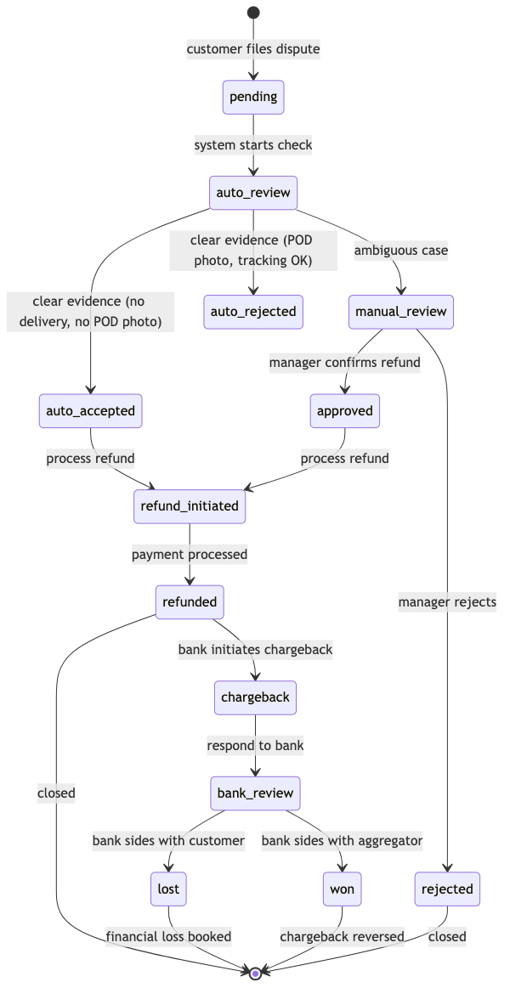
Типы споров:
| Тип | Пример | Авто-решение? | SLA |
|---|---|---|---|
| Товар не доставлен | Курьер отметил доставку, но клиент не получил | ✅ Да (проверка POD-фото + GPS трек) | < 1 час |
| Товар повреждён | Битая упаковка, испорченный продукт | ❌ Нет (нужно фото от клиента) | < 24 часа |
| Товар не соответствует описанию | Не тот вес, срок годности истёк | ❌ Нет (ручная проверка) | < 24 часа |
| Несанкционированная транзакция | Клиент утверждает, что не платил | ⚠️ Частично (проверка device fingerprint) | < 72 часа |
| Двойное списание | Два списания за один заказ | ✅ Да (проверка payment_id) | < 1 час |
Таблица ответственности:
| Ситуация | Кто несёт ответственность | Финансовые последствия |
|---|---|---|
| Товар не собран / не найден в магазине | Пикер / Магазин | Агрегатор взыскивает с магазина |
| Товар повреждён при сборке | Пикер | Стоимость товара списывается с пикера (после 3 инцидентов) |
| Товар повреждён при доставке | Курьер | Стоимость товара + штраф курьеру |
| Товар не доставлен (потерян) | Агрегатор | Полный refund клиенту за счёт агрегатора |
| Фрод со стороны клиента | Клиент | Блокировка аккаунта, chargeback оспаривается в банке |
| Ошибка платежного шлюза | Банк / Платёжный провайдер | Агрегатор оспаривает chargeback |
Блокировка клиентов (anti-fraud):
| Порог | Действие | Автоматически? |
|---|---|---|
| 3 disputes за 30 дней | Временная блокировка (7 дней) | ✅ Да |
| 5 disputes за 90 дней | Перманентная блокировка | ✅ Да + ручной review |
| Повторные chargeback > 2 | Блокировка новой регистрации с тем же phone/IP | ✅ Да |
| Pattern: множество мелких заказов с dispute | Блокировка + передача в security | ⚠️ Требуется подтверждение |
SLA:
| Этап | SLA | Ответственный |
|---|---|---|
| Авто-решение (достаточно данных) | Мгновенно | Система |
| Ручной разбор (стандартный) | < 24 часа | Support-менеджер |
| Ручной разбор (финансовый спор) | < 4 часа | Финансовый менеджер |
| Ответ на chargeback от банка | < 72 часа | Финансовый + Legal |
| Refund после решения | < 2 часа | Payment Service |
Финансовые последствия:
- Chargeback fee от банка: 500–1500 руб за один chargeback
- Fee распределяется по таблице ответственности:
- Если вина агрегатора — fee за счёт агрегатора
- Если вина магазина — fee выставляется магазину
- Если фрод клиента — fee за счёт клиента (блокировка + взыскание через коллектор при сумме > 5000 руб)
Согласование: BP-15 связан с BP-07 (возврат и отмена), §6.3 Legal Requirements (ЗоЗПП, 152-ФЗ), и §4.9 Customer Support Workflow. Процесс chargeback требует интеграции с банковским API (см. §2.5 Store API Integration Details).
User Story: Как администратор/менеджер, Я хочу управлять заказами, товарами, пользователями и просматривать аналитику из единой панели, Чтобы эффективно управлять платформой.
Acceptance Criteria: Дано: Я вхожу в панель администратора с учётными данными админа Когда: Я перехожу в раздел Заказы Тогда: Я вижу список всех заказов с фильтрами по статусу, дате и клиенту И Я могу просматривать детали заказа, изменять статус и добавлять комментарии
Дано: Мне нужно добавить новый товар Когда: Я заполняю форму товара с названием, ценой, изображениями и категорией Тогда: Товар сохраняется и появляется в каталоге клиента в течение 5 минут И Я могу дополнительно импортировать товары через CSV/Excel
Дано: Я захожу в раздел управления пользователями Когда: Я ищу пользователя по телефону или имени Тогда: Я вижу профиль пользователя, историю заказов и статус аккаунта И Я могу заблокировать/разблокировать пользователя или изменить его роль
Ссылки: → State Machine: §2.10 State Machine Diagrams → Sequence Diagram: §2.11 Sequence Diagrams → API endpoint: §2.7 API Versioning & Error Code Standard
Триггер: Менеджер заходит в админку
Бизнес-шаги:
- Управление заказами: список, фильтры, просмотр, изменение статуса, комментирование
- Управление товарами: CRUD, импорт/экспорт (CSV/Excel), управление ценами
- Управление пользователями: список, блокировка, смена роли
- Управление промокодами: создание, статистика использований
- Управление курьерами: назначение зон, просмотр рейтинга
- Аналитика: дашборды (выручка, заказы, конверсия)
Данные процесса:
orders,products,users,promo_codes,couriers— полный CRUD
UI / Интерфейсы:
- Веб-админка с разделением на модули (заказы, товары, пользователи, промокоды, курьеры, аналитика)
- Таблицы с фильтрами, поиском, пагинацией
- Формы создания/редактирования
- Дашборды с графиками
Бизнес-правила:
- Доступ только для пользователей с ролью admin/manager
- Аудит действий (лог изменений)
Технические заметки:
- Импорт/экспорт товаров через CSV/Excel
- Разграничение прав доступа (admin vs manager)
- Логирование всех действий
Оценка:
| Команда | Дней |
|---|---|
| Backend | 15 |
| Frontend | 20 |
| QA | 5 |
| Итого | 40 |
BP-12: Аналитика и дашборды (15 чел.-дней)
User Story: Как бизнес-аналитик, Я хочу просматривать ключевые метрики и тренды на дашборде, Чтобы принимать бизнес-решения на основе данных.
Acceptance Criteria: Дано: Я открываю дашборд аналитики Когда: Я выбираю диапазон дат Тогда: Я вижу DAU/MAU, выручку, средний чек и воронку конверсии И Все графики загружаются в течение 3 секунд
Дано: Я хочу проанализировать эффективность доставки Когда: Я просматриваю операционный дашборд Тогда: Я вижу среднее время сборки, среднее время доставки и загрузку курьеров И Я могу детализировать по магазину или периоду времени
Дано: Нет данных за выбранный период Когда: Дашборд загружается Тогда: Я вижу сообщение «Нет данных за этот период» И Пустые графики с подсказкой изменить фильтр
Ссылки: → State Machine: §2.10 State Machine Diagrams → Sequence Diagram: §2.11 Sequence Diagrams → API endpoint: §2.7 API Versioning & Error Code Standard
Триггер: Запрос аналитика / руководителя
Бизнес-шаги:
- Выбор периода — Пользователь выбирает период (день/неделя/месяц)
- Загрузка метрик — Система агрегирует данные по заказам, пользователям, выручке
- Отображение дашборда — Система показывает ключевые метрики и графики
Метрики:
- DAU/MAU, конверсия шагов воронки
- Выручка (день/неделя/месяц), средний чек
- Топ товаров, топ категорий
- Количество заказов по статусам
- Среднее время сборки, среднее время доставки
UI / Интерфейсы:
- Дашборды с графиками и таблицами
- Фильтры по дате, магазину, категории
Технические заметки:
- Агрегация данных для отчётов
- Кэширование результатов для быстрой загрузки
Оценка:
| Команда | Дней |
|---|---|
| Backend | 8 |
| Frontend | 5 |
| QA | 2 |
| Итого | 15 |
4.5 B2B Domain (Корпоративные заказы)
Источник: Раздел 2.2 исходного документа.
BP-13: B2B — Корпоративные заказы (27 чел.-дней)
User Story: Как B2B-клиент, Я хочу размещать оптовые заказы с корпоративными ценами и отсрочкой платежа, Чтобы эффективно пополнять запасы офиса.
Acceptance Criteria: Дано: Я зарегистрирован как юридическое лицо Когда: Я вхожу в B2B-портал Тогда: Я вижу персонализированные цены для моей компании И Я могу создать заказ с более высокой минимальной суммой, чем B2C
Дано: Я размещаю B2B-заказ Когда: Заказ отправлен Тогда: Назначенный менеджер проверяет и подтверждает его И Я получаю счёт на оплату с отсрочкой платежа
Дано: У моей компании подписан договор Когда: Мне нужны закрывающие документы Тогда: Система генерирует УПД через ЭДО (Диадок/СБИС) И Документы отправляются электронно
Ссылки: → State Machine: §2.10 State Machine Diagrams → Sequence Diagram: §2.11 Sequence Diagrams → API endpoint: §2.7 API Versioning & Error Code Standard
Триггер: Представитель юрлица оформляет заказ для офиса
Отличия от B2C:
| Аспект | B2C | B2B |
|---|---|---|
| Заказчик | Физлицо | Юрлицо (компания) |
| Оплата | Онлайн / при получении | Безналичный расчёт, счёт, отсрочка платежа |
| Документы | Электронный чек (54-ФЗ) | Счёт, акт, накладная, УПД (через ЭДО) |
| Доставка | Квартира / дом | Офис, ресепшн, склад |
| Объём | 1–80 кг | До паллеты / несколько заказов одновременно |
| Повторение | Разовые | Регулярные (ежедневно / еженедельно) |
| Персонализация | Нет | Свой ассортимент, согласованные цены |
Бизнес-шаги:
- Регистрация юрлица — Менеджер заполняет карточку: название, ИНН, КПП, юр./факт. адрес (договор оферты, подписание через ЭДО)
- Назначение персональных цен — Менеджер согласовывает цены на определённые товары (фиксированные цены на 3–6 месяцев)
- Создание заказа — Представитель выбирает товары из каталога (возможно, свой ассортимент) (минимальная сумма выше, чем в B2C)
- Подтверждение — Менеджер проверяет заказ и подтверждает сборку
- Доставка — Курьер доставляет в офис, получает подпись ответственного лица (акт приёма-передачи)
- Оплата — Бухгалтерия выставляет счёт, оплата по безналу (3–30 дней) (отсрочка после утверждения кредитного лимита)
- Закрытие — Менеджер оформляет УПД через ЭДО (Диадок / СБИС) (электронная подпись)
Данные процесса:
b2b_companies: id, name, inn, kpp, legal_address, actual_address, credit_limit, payment_deferral_days, contract_number, contract_date, edo_provider (diadoc/sbis)b2b_prices: id, company_id, product_id, price, valid_from, valid_untilb2b_orders: id, order_id, company_id, po_number (номер заказа компании), delivery_note
UI / Интерфейсы:
- Личный кабинет юрлица: свой каталог с ценами, история заказов, счета, закрывающие документы
- Менеджер в админке: управление компаниями, договорами, ценами, подтверждение заказов
Интеграции:
- ЭДО (Диадок / СБИС) — УПД, счета, акты
- Бухгалтерия (1С) — выгрузка счетов, актов сверки
Бизнес-правила:
- Только для юрлиц с подписанным договором оферты
- Персональные цены фиксируются на 3–6 месяцев
- Минимальная сумма заказа выше, чем в B2C
- Отсрочка платежа после утверждения кредитного лимита
- Закрывающие документы через ЭДО
Технические заметки:
- Интеграция с ЭДО (Диадок / СБИС) для обмена документами
- Интеграция с 1С для бухгалтерского учёта
- Разграничение каталога и цен для каждого юрлица
Оценка:
| Команда | Дней |
|---|---|
| Backend | 15 |
| Frontend | 8 |
| QA | 4 |
| Итого | 27 |
4.6 Cross-Cutting Domains (Сквозные)
Источник: Раздел 2.2 исходного документа.
BP-09: Уведомления (Push / SMS / Email) (9 чел.-дней)
User Story: Как клиент, Я хочу получать уведомления о статусе заказа, Чтобы оставаться в курсе без постоянной проверки приложения.
Acceptance Criteria: Дано: Происходит событие заказа (создан, оплачен, собран, доставлен) Когда: У меня включены push-уведомления Тогда: Я получаю push-уведомление с соответствующим обновлением статуса И Сообщение содержит номер заказа и текущий статус
Дано: Доставка назначена и курьер в пути Когда: Система отправляет уведомление Тогда: Я получаю SMS с ETA курьера И Push-уведомление с той же информацией
Дано: Я не хочу получать рекламные уведомления Когда: Я отключаю рекламные уведомления в настройках Тогда: Я перестаю получать рекламные push-сообщения Но всё ещё получаю уведомления, связанные с заказом
Ссылки: → State Machine: §2.10 State Machine Diagrams → Sequence Diagram: §2.11 Sequence Diagrams → API endpoint: §2.7 API Versioning & Error Code Standard
Триггер: Событие в системе (заказ создан, оплачен, доставлен)
События и каналы:
| Событие | Каналы | Шаблон |
|---|---|---|
order.created |
Push, Email | «Заказ №{id} принят, начали сборку» |
order.picker_started |
Push | «Пикер начал собирать заказ» |
order.substitution |
Звонок пикера | Пикер звонит, если товара нет в наличии |
payment.succeeded |
Push | «Заказ №{id} оплачен» |
delivery.assigned |
Push, SMS | «Курьер выехал, ETA {time}» |
delivery.delivered |
Push, Email | «Заказ №{id} доставлен. Спасибо!» |
promo.received |
Push | «Вам начислен промокод {code}» |
order.reminder |
Push | «Не забудьте подтвердить заказ на завтра» |
Бизнес-правила:
- Push-уведомления для мобильных клиентов
- Email для юридически значимых событий (чек, отмена)
- SMS для критичных уведомлений (курьер выехал)
- Звонок пикера — только при отсутствии товара (замена)
Технические заметки:
- Push через Firebase Cloud Messaging (FCM)
- Email через SMTP-провайдер
- SMS через SMS-провайдер
- Шаблонизация сообщений
Оценка:
| Команда | Дней |
|---|---|
| Backend | 5 |
| Mobile (push) | 2 |
| QA | 2 |
| Итого | 9 |
BP-14: Dynamic Pricing (динамическое ценообразование) (15 чел.-дней)
User Story: Как менеджер по ценообразованию, Я хочу настраивать правила динамического ценообразования на основе спроса, погоды и других факторов, Чтобы стоимость доставки оптимизировала выручку и загрузку курьеров.
Acceptance Criteria: Дано: Клиент просматривает оформление заказа Когда: Система рассчитывает стоимость доставки Тогда: Стоимость включает динамические множители на основе текущих условий (время, погода, загрузка курьеров) И Итоговая цена отображается перед подтверждением заказа
Дано: Погода суровая (снег, дождь, мороз ниже -15°C) Когда: Запускается механизм динамического ценообразования Тогда: Стоимость доставки умножается на погодный коэффициент (до 1.5x) Но Никогда не превышает 2x от базовой цены
Дано: Государственный праздник с высоким спросом Когда: Клиент оформляет заказ Тогда: Праздничный множитель (до 1.8x) применяется к стоимости доставки И Клиент видит причину наценки
Ссылки: → State Machine: §2.10 State Machine Diagrams → Sequence Diagram: §2.11 Sequence Diagrams → API endpoint: §2.7 API Versioning & Error Code Standard
Триггер: Изменение внешних факторов (пиковые часы, погода, праздники, загрузка курьеров)
Факторы влияния на цену:
| Фактор | Источник данных | Влияние |
|---|---|---|
| Загрузка курьеров | Dispatch service (свободные / все курьеры) | Чем меньше свободных — тем выше цена доставки |
| Время суток | Системное время | Пик 17:00–20:00 (вечерний час пик) — надбавка |
| День недели | Календарь | Пятница, суббота — надбавка; будни — базовая цена |
| Погода | OpenWeather API | Дождь, снег, мороз (< -15°C) — надбавка 20–50% |
| Праздники | Календарь праздников | Новый год, 8 марта, 14 февраля — надбавка |
| Расстояние | OSRM (до магазина → до клиента) | Чем дальше — тем дороже доставка |
| Вес заказа | Order service | > 50 кг — надбавка за логистику |
| История клиента | Analytics | Лояльные клиенты (10+ заказов) — скидка |
Математическая модель:
base_delivery_fee = zone.base_fee
multipliers = [
courier_availability_factor, # 0.8–2.0
time_factor, # 1.0 (день) / 1.3 (пик)
weather_factor, # 1.0 (ясно) / 1.5 (снегопад)
holiday_factor, # 1.0 (будни) / 1.8 (Новый год)
distance_factor, # 1.0 (3 км) / 1.5 (10 км)
weight_factor # 1.0 (< 30 кг) / 1.3 (> 50 кг)
]
final_fee = base_delivery_fee * product(multipliers)Бизнес-правила:
- Dynamic Pricing влияет только на стоимость сборки и доставки, не на цены товаров в каталоге. Цены товаров фиксированы ритейлером и не могут быть изменены платформой без согласования.
- Максимальная надбавка к стоимости доставки — 2× от базового тарифа доставки (не от цены товаров)
- Клиент видит финальную стоимость доставки до оформления (в корзине)
- Клиент может отложить заказ на час — цена может измениться в обе стороны
- Если не уверены — выпускать как MVP с фиксированной ценой доставки, добавить в V2/V3
Технические заметки:
- ML-модель для расчёта мультипликаторов
- Интеграция с OpenWeather API для данных о погоде
- Интеграция с OSRM для расчёта расстояния
- Интеграция с Dispatch service для загрузки курьеров
Оценка:
| Команда | Дней |
|---|---|
| Backend (ML модель + API) | 10 |
| Frontend (отображение динамической цены) | 3 |
| QA | 2 |
| Итого | 15 |
4.7 Feature Map (Карта функциональных требований)
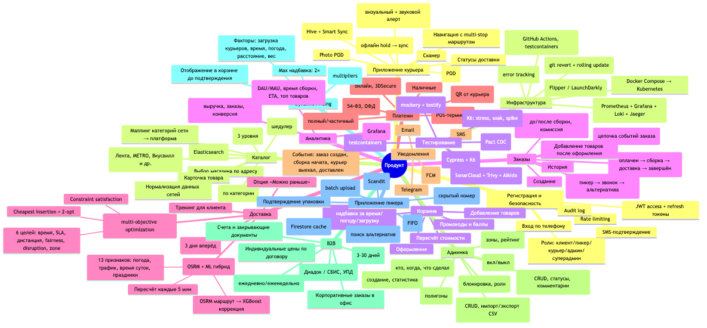
- Регистрация и безопасность
- Вход по телефону
- SMS-подтверждение
- Роли: клиент/пикер/курьер/админ/суперадмин
- JWT access + refresh токены
- Rate limiting
- Audit log
- Каталог
- Выбор магазина по адресу
- Категории (3 уровня)
- Поиск (Elasticsearch)
- Динамические фильтры (по категории)
- Карточка товара
- Нормализация данных сетей
- Маппинг категорий сети → платформа
- Адаптеры сетей (Лента, METRO, Вкусвилл и др.)
- Синхронизация цен/остатков (шедулер)
- Корзина
- Добавление товаров
- Промокоды и баллы
- Dynamic Pricing (надбавка за время/погоду/загрузку)
- Пересчёт стоимости
- Оформление
- Заказы
- Создание
- Статусы (оплачен → сборка → доставка → завершён)
- Добавление товаров после оформления
- История
- Замена товара (пикер → звонок → альтернатива)
- Возврат и отмена (до/после сборки, комиссия)
- Event Sourcing (цепочка событий заказа)
- Доставка
- Временные слоты (3 дня вперёд)
- Dispatch (multi-objective optimization): Cheapest Insertion + 2-opt, 6 целей, Constraint satisfaction
- ETA (OSRM + ML гибрид): OSRM маршрут → XGBoost коррекция, 13 признаков, пересчёт каждые 5 мин
- Трекинг для клиента
- Опция «Можно раньше»
- Платежи
- Т-Банк (онлайн, 3DSecure), СБП (QR от курьера), Карта курьеру (POS-терминал), Наличные
- Refund (полный/частичный)
- Чек (54-ФЗ, ОФД)
- Уведомления
- Push (FCM), SMS, Email, Telegram
- События: заказ создан, сборка начата, курьер выехал, доставлен
- Админка
- Управление заказами, товарами, пользователями, промокодами, курьерами/пикерами, магазинами/зонами
- Управление сетями-адаптерами (вкл/выкл)
- Audit log
- B2B
- Корпоративные заказы в офис, регулярные поставки
- Индивидуальные цены по договору, отсрочка платежа (3–30 дней)
- ЭДО (Диадок / СБИС, УПД), счета и закрывающие документы
- Dynamic Pricing
- Факторы: загрузка курьеров, время, погода, расстояние, вес
- Формула: base_fee × product(multipliers), Max надбавка: 2×
- Отображение в корзине до подтверждения
- Приложение пикера
- Список заказов (FIFO), сканер штрихкодов (Scandit)
- Замены товаров, звонок клиенту (скрытый номер)
- Offline-режим (Firestore cache), Smart Sync Queue (batch upload)
- Подтверждение упаковки
- Приложение курьера
- Навигация с multi-stop маршрутом, Offline-режим (Hive + Smart Sync)
- Off-route detection, приём оплаты (офлайн hold → sync)
- Digital Signature (POD), Photo POD, сканер, статусы доставки
- Инфраструктура
- CI/CD (GitHub Actions, testcontainers), Docker Compose → Kubernetes
- Мониторинг (Prometheus + Grafana + Loki + Jaeger), Sentry
- Feature flags (Flipper / LaunchDarkly), Rollback (git revert + rolling update)
- Тестирование
- Unit (mockery + testify), Integration (testcontainers), Contract (Pact CDC)
- E2E (Cypress + K6), Load (K6: stress, soak, spike), Security (SonarCloud + Trivy + Aikido)
- Аналитика
- Дашборды (Grafana), Отчёты (выручка, заказы, конверсия)
- Метрики (DAU/MAU, время сборки, ETA, топ товаров)
4.8 Cross-Cutting: Offline Strategy
Система должна работать в условиях нестабильного соединения — ключевое требование для пикеров (подвалы магазинов) и курьеров (тоннели, отдалённые районы).
| Сценарий | Компонент | Стратегия |
|---|---|---|
| Пикер: нет интернета в магазине | Picker App (Flutter + Firestore) | Firestore offline persistence — последний загруженный заказ на
экране, сканер работает локально, отметки в local queue. При
восстановлении — batch sync с сервером, разрешение конфликтов по
updated_at |
| Курьер: нет связи в пути | Courier App (Flutter + Hive) | Hive — локальное хранилище маршрута, статусов, фото. Smart Sync Queue — batch upload при появлении сети. Off-route detection работает на локальных данных |
| Сервер: потеря связи с магазином | Catalog Sync Service | Последние известные цены/остатки остаются в кэше (Redis). Шедулер повторяет запрос с exponential backoff (30s → 5min → 15min → 1h) |
| Клиент: обрыв при оплате | Payment Service | Идемпотентность платежей (idempotency_key). При обрыве — проверка статуса через GET /payments/{id}. Hold на карте снимается через 24ч если не подтверждён |
| Клиент: прерванное оформление заказа | Cart Service | Корзина живёт в Redis с TTL 24ч. При reconnect — восстановление корзины по session_id |
| Отправка уведомлений | Notification Service | Dead letter queue для недоставленных push/SMS. Retry 3 раза с интервалом. После 3-х неудач — fallback на SMS |
4.9 Customer Support Workflow
| Аспект | Описание |
|---|---|
| Каналы связи | Чат в приложении, Telegram-бот (MVP), телефон (через API телефонии) |
| Типовые обращения | Замена товара не согласована, задержка доставки, неверная позиция, возврат средств, проблема с промокодом |
| Инструмент поддержки | Админ-панель (BP-11): просмотр заказа, история событий, отправка сообщения клиенту, ручное изменение статуса, оформление возврата |
| SLA ответа | Первый ответ: < 15 мин (часы работы 9:00–22:00). Критичные (ошибка оплаты): < 5 мин |
| Эскалация | 1-я линия: чат/Telegram → бот отвечает автоматически по FAQ. 2-я линия: менеджер в админке. 3-я линия: технический специалист (DEV) |
| Интеграции | Email/SMS для offline-клиентов. Telegram Bot API. API телефонии для звонков (через скрытый номер) |
5. Infrastructure & DevOps (Инфраструктура)
5.1 Environments (Окружения)
| Окружение | Цель | Развёртывание | База данных | Доступ |
|---|---|---|---|---|
| dev | Разработка, feature-ветки | Docker Compose на машине разработчика | PostgreSQL + Redis (локальные) | Разработчики |
| staging | Интеграционное тестирование | GitHub Actions → Docker Compose на Selectel VM | PostgreSQL + Redis + ES (shared staging) | Команда + QA |
| prod | Продуктив | GitHub Actions → Docker Compose / K8s | PostgreSQL (RDS/Self-hosted) + Redis Cluster + ES | Продуктив |
5.2 CI/CD Pipeline
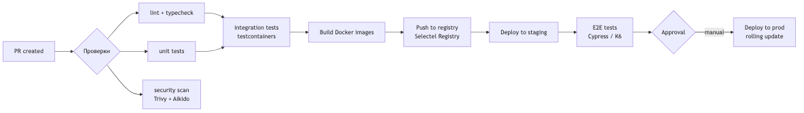
Ключевые правила:
- Ветка
mainвсегда зелёная — все проверки обязательны - Feature-флаги для включения/выключения фич без деплоя
- Rollback:
git revert+ деплой предыдущего Docker-образа - Production deploy — только с manual approval
- Миграции БД — через
strong_migrations(Rails) илиgolang-migrate, обратно-совместимые
5.3 Deployment & Release Strategy
Цикл релиза:
| Этап | Длительность | Подробности |
|---|---|---|
| Feature development | 1–2 недели | Feature branch → PR → code review → тесты |
| Staging validation | 1–2 дня | QA-тестирование на staging, авто-тесты |
| Release candidate | — | Создание тега v{major}.{minor}.{patch} |
| Production deploy | rolling update | Без downtime, по одному сервису |
| Post-deploy monitoring | 1 час | Наблюдение за ошибками (Sentry) + метриками (Grafana) |
| Hotfix | < 1 часа | Ветка от main → тесты → деплой |
Feature flags:
- Использовать
Flipper(Rails) /LaunchDarklyдля включения/выключения фич без деплоя - Пример:
feature_b2b_orders— включает B2B-интерфейс в админке - Флаг живёт не дольше 2 спринтов → удаляется после стабилизации
Rollback:
git revert <sha>наmain- CI билдит предыдущий образ
- Rolling update сервиса
- Проверка метрик (Grafana + Sentry)
- Уведомление команды
Деплой мобильных приложений:
| Платформа | Staging | Production |
|---|---|---|
| iOS | TestFlight (внутреннее тестирование) | App Store Review (1–3 дня) |
| Android | Internal Testing Track (Google Play) | Production Track |
| Huawei AppGallery | — | Ручная выгрузка .apk |
| RuStore | — | Ручная выгрузка |
5.4 Monitoring & Alerting
- Prometheus + Grafana (метрики, дашборды)
- Loki + Promtail (логи)
- Jaeger (tracing, критичные сценарии)
- Sentry (error tracking, алерт на каждый новый error type)
- Uptime Kuma (healthcheck)
5.5 Performance & SLAs
Источник: Раздел 5.11 исходного документа.
| Метрика | Цель (SLO) | Измерение |
|---|---|---|
| Время ответа API каталога | p95 < 500ms | Prometheus + Grafana |
| Время ответа API заказа | p95 < 200ms | Prometheus |
| Доступность (Uptime) | 99.9% (исключая плановые окна) | Uptime Kuma / Grafana |
| Количество заказов/день | MVP: 100; V2: 1000; V3: 10000 | Business metrics |
| Время сборки заказа | < 30 мин (среднее) | Picker app → Backend |
| Время доставки | < 60 мин (город) | Courier app → Backend |
| Допустимый downtime | < 1 час / месяц | PagerDuty / Oncall |
| RPS (каталог) | MVP: 50; V2: 500; V3: 5000 | K6 + Prometheus |
| RPS (оформление) | MVP: 5; V2: 50; V3: 500 | K6 |
Бюджет ошибок (Error Budget): 99.9% uptime = 43 мин/месяц downtime. Если бюджет исчерпан — новые деплои блокируются до выяснения причины.
5.6 Incident Response
| Severity | Определение | Реакция | Время реакции |
|---|---|---|---|
| P0 (Critical) | Система не работает: платёжный шлюз недоступен, каталог не грузится, все заказы встали | Немедленный созвон команды. Rollback последнего деплоя. Информирование в Slack #incident | < 5 мин |
| P1 (Major) | Серьёзная деградация: медленный каталог, ошибки оплаты у 10%+ пользователей | Дежурный подключается. Фикс в течение часа. Hotfix через CI | < 15 мин |
| P2 (Minor) | Частичная деградация: не грузятся фото, медленный поиск | Фикс в рамках текущего или следующего спринта | < 4 ч |
| P3 (Cosmetic) | Косметические баги: кривой шрифт, опечатка | В бэклог, приоритет ниже фич | Следующий спринт |
Инструменты: Sentry (алерт на каждый новый error type), Uptime Kuma (healthcheck), Grafana (SLO violation alert)
5.7 Backup & Disaster Recovery
| Параметр | Значение |
|---|---|
| RPO (потери данных) | ≤ 1 час (PgBouncer + WAL streaming) |
| RTO (восстановление) | ≤ 4 часа (из бэкапа на новый сервер) |
| Частота бэкапов | Полный: ежедневно в 03:00. WAL: каждые 15 мин. Логи: ежедневно |
| Хранение | Полные: 30 дней. WAL: 7 дней. Снимки перед релизом: 90 дней |
| Шифрование бэкапов | AES-256 (GPG), ключи в GitHub Secrets |
| Restore-тест | Автоматический restore на staging каждую неделю (GitHub Actions) |
| DR-план | Selectel → резервный регион. DNS-переключение через Cloudflare. Восстановление: Terraform apply → restore DB → verify healthcheck |
| Критические данные | Таблицы заказов (orders, payments,
deliveries), пользователи (users),
конфигурация адаптеров (chains) |
5.8 FinOps (Оптимизация расходов на облако)
Подробнее — в finops.md.
5.9 Service Readiness Checklist
Перед запуском каждого нового сервиса в production:
5.10 Vendor Lock-in & Exit Strategy
Матрица зависимостей от внешних провайдеров, уровень lock-in и план выхода для каждого критического сервиса. Согласовано с §2.2 Technology Stack, §1.4 External Integrations и §5.7 Backup & DR.
Матрица зависимостей:
| Сервис / Провайдер | Тип | Риск lock-in | Альтернатива | Время миграции | Сложность |
|---|---|---|---|---|---|
| Selectel Cloud | IaaS (VM, S3, DB) | Средний — открытые форматы (KVM, S3 API), но нет автоматического экспорта оркестрации | Yandex Cloud, VK Cloud | 2–4 недели | Средняя |
| Т-Банк API | Платёжный шлюз | Высокий — собственная SDK, 54-ФЗ касса | СБП (Сбер, ВТБ), ЮKassa, Yandex Pay | 4–8 недель | Высокая |
| RabbitMQ | Message broker | Средний — AMQP 0-9-1, но Kafka/Pulsar требуют переписывания consumers | Apache Kafka, Apache Pulsar, NATS | 6–12 недель | Высокая |
| Elasticsearch | Поиск / аналитика | Средний — Elasticsearch API, есть OpenSearch (форк) | OpenSearch, Meilisearch (V3) | 4–8 недель | Средняя |
| Redis | Кэш / очереди | Низкий — открытый протокол, есть совместимые аналоги (KeyDB, Dragonfly) | KeyDB, Dragonfly, Valkey | 1–2 недели | Низкая |
| PostgreSQL | Основная БД | Низкий — открытый стандарт, любой cloud-PaaS | RDS (AWS, Yandex), TimescaleDB | 1–2 недели | Низкая |
| Firebase (FCM, Firestore) | Push, offline sync | Высокий — проприетарные API | Self-hosted: Appwrite, Supabase, собственный WebSocket gateway | 8–16 недель | Высокая |
| Яндекс.Метрика | Аналитика | Низкий — события дублируются в ClickHouse (V2), можно переключить дашборды | Amplitude, PostHog (self-hosted), ClickHouse + Grafana | 2–4 недели | Средняя |
| Sentry | Error tracking | Низкий — self-hosted версия существует | Self-hosted Sentry, GlitchTip | 1–2 недели | Низкая |
| OSRM | Маршрутизация | Средний — OSM данные + OSRM open-source, но требуется собственный сервер | GraphHopper (self-hosted), Yandex.Maps API | 4–6 недель | Средняя |
| Яндекс.Карты / Google Maps | Геокодер / отображение | Высокий — привязка пользователей к UI | 2GIS, OSM + Leaflet (self-hosted tiles) | 6–10 недель | Средняя |
| CDN (Selectel / Cloudflare) | Доставка контента | Низкий — статика, смена CNAME | Любой CDN (Cloudflare, VK CDN, Qiwi CDN) | 1–2 дня | Низкая |
План выхода по категориям риска:
| Уровень | Критерий | Действия |
|---|---|---|
| CRITICAL | Блокирует приём платежей или работу платформы | Parallel run 4 нед, cut-over за 1 день, откат за 4 часа, validation каждого 10-го заказа |
| HIGH | Существенно влияет на UX или стоимость | Data export заранее, parallel run 2 нед, A/B тест на 10% трафика |
| MEDIUM | Можно терпеть 2–4 мес | Плавная миграция без downtime, feature flag |
| LOW | Замена за 1–2 дня | Простая смена конфига |
Contractual safeguards (рекомендации для договоров):
- SLA: не ниже 99.9%, с компенсацией (5–30% за каждый час простоя)
- Data export: право на выгрузку всех данных в открытом формате (JSON, CSV, NDJSON) в любое время
- Price lock: фиксация цен на 12–24 мес, уведомление за 90 дней о повышении
- Exit support: обязательство провайдера предоставлять доступ к данным 30–90 дней после расторжения
- Code escrow: для критических SDK (Т-Банк) — требование передать SDK в escrow или заменить на OpenAPI-спецификацию
5.11 Multi-Region & Disaster Recovery
Развитие существующего DR-плана (§5.7 Backup & Disaster Recovery) до multi-region архитектуры. Согласовано с §2.4 Infrastructure & Deployment и §5.7.
Эволюция по этапам:
| Этап | Модель | PostgreSQL | Redis | RabbitMQ | S3 |
|---|---|---|---|---|---|
| MVP | Active-Passive (Selectel MSK + холодный standby в другой зоне) | Асинхронная streaming replication | Replication (master → replica) | — | — |
| V2 | Active-Passive (MSK active + SPB warm standby) | Синхронная streaming replication (synchronous_commit = on) | Sentinel failover | Shovel (однонаправленный) | Cross-region replication (S3 → S3) |
| V3 | Active-Active (MSK + SPB + EKB) | Logical replication (bidirectional, conflict resolution) | Active-Active Redis (CRDT) | Federation (multi-directional) | Cross-region replication (active-active) |
Geo-routing:
| Компонент | MVP | V2 | V3 |
|---|---|---|---|
| DNS | Cloudflare — один A-запись, ручное переключение | Cloudflare — geo-weighted, автоматический healthcheck | Cloudflare — Anycast, автоматический failover |
| API Gateway | Единый endpoint | Единый endpoint + geo-DNS | API Gateway в каждом регионе, global load balancer |
| Статика (CDN) | Selectel CDN | Selectel + Cloudflare (multi-CDN) | Multi-CDN с автоматическим переключением |
| Пользователь | Всегда MSK | По геолокации: MSK / SPB | По геолокации + latency: ближайший регион |
Data synchronization:
| Компонент | MVP (Active-Passive) | V2 (Warm Standby) | V3 (Active-Active) |
|---|---|---|---|
| PostgreSQL | Асинхронная streaming replication. RPO < 1 ч, RTO < 4 ч | Синхронная replication (synchronous_commit = remote_write). RPO = 0, RTO < 15 мин | Logical replication с conflict resolution (last-writer-wins + application-level merge). RPO < 1 с |
| Redis | Master → Replica (keepalive). Потеря кэша при failover | Sentinel: автоматический failover, loss < 1 мин | Active-Active (CRDT-based: Redis Enterprise / KeyDB) |
| RabbitMQ | — (очереди не реплицируются) | Shovel: однонаправленная пересылка сообщений из MSK → SPB | Federation: все очереди доступны во всех регионах |
| S3 (Selectel) | — | bucket → bucket (однонаправленно, раз в час) | Cross-region replication (непрерывная, master-master) |
| Elasticsearch | — | — | Cross-cluster replication (CCR, follower → leader) |
Failover procedure:
| Этап | Действие | Автоматизация | Time budget |
|---|---|---|---|
| Detection | Healthcheck провалился (3/3 попытки, 5s timeout) | Uptime Kuma → PagerDuty → Slack #incident | < 30 с |
| Decision | Дежурный подтверждает failover (или auto-failover при P0) | Slack approve / auto-trigger | < 2 мин |
| DNS switch | Cloudflare: CNAME → standby регион (TTL = 60 с) | Terraform / Cloudflare API + GitHub Actions | < 2 мин |
| DB promote | PostgreSQL: pg_ctl promote на standby → новый
master |
Ansible playbook | < 5 мин |
| App deploy | Docker Compose → standby region, указать новый DB host | GitHub Actions (reusable workflow) | < 5 мин |
| Validation | Healthcheck /health + /ready + synthetic
order creation |
Automated test suite | < 3 мин |
| Total RTO | — | — | < 15 мин (V2+) |
Regional dependencies:
| Сервис | Обязателен в каждом регионе | Может быть global |
|---|---|---|
| PostgreSQL (shard региона) | ✅ Все данные региона | — |
| Redis (кэш региона) | ✅ Кэш региона | — |
| API Gateway | ✅ Входная точка | — |
| Auth service | ✅ JWT верификация | Можно shared (центральный JWKS) |
| Catalog service | ✅ Данные сетей региона | Метаданные — global |
| Order service | ✅ Данные региона | — |
| Payment service | ❌ Централизован | ✅ Global (один экземпляр для всех) |
| Search (ES) | ❌ | ✅ Global — кросс-региональный поиск |
| Admin panel | ❌ | ✅ Global — единая точка управления |
| CDN | ❌ | ✅ Global — статика едина |
| Queue (RabbitMQ) | ❌ До V3 | ✅ Global (Federation V3) |
Runbook (MVP failover):
# 1. Проверить, что standby жив
ssh deploy@standby-selectel "pg_isready -h localhost"
# 2. Promote standby → master
ssh deploy@standby-selectel "pg_ctl promote -D /var/lib/postgresql/data"
# 3. Обновить DNS
curl -X PATCH "https://api.cloudflare.com/client/v4/zones/$ZONE/dns_records/$RECORD" \
-H "Authorization: Bearer $TOKEN" \
-H "Content-Type: application/json" \
-d '{"content": "STANDBY_IP", "ttl": 60}'
# 4. Перезапустить приложения в standby-region с новым DB_HOST
gh workflow run deploy.yml -f region=standby -f db_host=localhost
# 5. Проверить healthcheck
curl -f https://health.example.com/api/health && echo "OK"6. Security & Compliance (Безопасность)
6.1 Authentication & Authorization
| Роль | Доступ | Привилегии |
|---|---|---|
| Клиент | Web / Mobile | Каталог, корзина, заказы, личный кабинет, промокоды |
| Пикер | Picker App | Список заказов (только назначенные), сканер, замена товара, отметки сборки |
| Курьер | Courier App | Назначенные доставки, навигация, приём оплаты, фото, подпись |
| Менеджер (Admin) | Admin Panel | Заказы (все), товары, пользователи, курьеры, промокоды, аналитика |
| Супер-админ | Admin Panel (full) | Всё + управление ролями, доступ к логам, audit trail |
| DevOps | Инфраструктура | Доступ к серверам, CI/CD, мониторинг, БД (read-only) |
6.2 Data Protection
| Область | Политика |
|---|---|
| Аутентификация | JWT access (15 мин) + refresh (30 дней, rotation); возможность принудительного завершения всех сессий |
| Rate limiting | 100 req/min на пользователя; 1000 req/min на IP (Nginx
limit_req) |
| Шифрование | TLS 1.3 для всех внешних соединений; шифрование ПДн в БД (AES-256); пароли — bcrypt |
| Безопасность API | CSRF-токены (Web); API-ключи для внешних интеграций; CORS — только домены приложения |
| Аудит | audit_log — кто, когда, что сделал с
заказом/пользователем/товаром. Хранить 1 год |
| Секреты | .env Vault / GitHub Secrets (не в репозитории); ротация
ключей каждые 90 дней |
| Мониторинг безопасности | Sentry (error tracking) + Aikido (SAST, dependency scan, secret leaks) на каждый PR |
6.3 Compliance Matrix (Юридические требования)
Матрица соответствия законодательству РФ. Согласовано с BP-07 (возврат), BP-15 (dispute), §6.2 Data Protection, §1.1.3 География (РФ → российские законы), §8.3 Roadmap (MVP/V2/V3).
| Требование | Закон | MVP? | Что реализуем | Ответственный | Ссылка в SRS | Статус |
|---|---|---|---|---|---|---|
| Согласие на обработку ПДн | 152-ФЗ | ✅ Да | Чекбокс при регистрации + политика конфиденциальности | Backend + Frontend + Legal | BP-01 | To Do |
| Шифрование ПДн (phone, email) | 152-ФЗ | ✅ Да | AES-256 для столбцов phone, email | Backend | §3.4 | To Do |
| Уведомление Роскомнадзора | 152-ФЗ | ✅ Да | Подача уведомления до запуска | Legal | — | To Do |
| Право на удаление данных | 152-ФЗ | ✅ Да | Кнопка «Удалить аккаунт» в ЛК + background job | Backend + Frontend | BP-10 | To Do |
| Локализация ПДн на территории РФ | 152-ФЗ ст.18 | ✅ Да | БД на Selectel (Москва/СПБ), резервный регион | DevOps | §5.7 | To Do |
| Фискальный чек (продажа/возврат) | 54-ФЗ | ✅ Да | ОФД-интеграция, ФФД 1.2, отправка чека (SMS/Email/QR) | Backend | §2.5 | To Do |
| Информация о товаре (состав, вес, срок) | ЗоЗПП | ✅ Да | Карточка товара с обязательными полями | Backend + Catalog | BP-02 | To Do |
| Возврат 14 дней (надлежащего качества) | ЗоЗПП | ✅ Да | UI возврата в ЛК + процесс в BP-07 | Backend + Frontend | BP-07 | To Do |
| Возврат брака (ненадлежащее качество) | ЗоЗПП | ✅ Да | Полный refund + процесс в BP-15 | Backend + Frontend | BP-15 | To Do |
| Маркировка «Честный знак» | ЦРПТ (173-ФЗ) | ❌ Нет | Не включаем маркированные товары в MVP | — | — | N/A |
| Алкоголь (ЕГАИС) | 171-ФЗ | ❌ Нет | Алкоголь не доставляем | — | — | N/A |
| Онлайн-кассы для агента | 54-ФЗ (агентская схема) | ❌ V2 | Если агрегатор работает как агент (перепоручает приём денег) | Backend + Legal | — | V2 |
| СУБД из реестра отечественного ПО | import substitution | ❌ V3 | Переход на PostgreSQL (уже) или Postgres Pro | DevOps | — | V3 |
Риски несоответствия:
| Требование | Штраф / Последствие | Вероятность | Митигация |
|---|---|---|---|
| Утечка ПДн без уведомления РКН | До 500 000 руб (КоАП 13.11) + блокировка сайта | Low (при соблюдении §6.2) | Шифрование, audit log, DPA с провайдерами |
| Отсутствие онлайн-чека | До 30 000 руб за чек (54-ФЗ ст.14.5) — на каждую операцию | Medium | ОФД-интеграция с первым релизом |
| Несоблюдение ЗоЗПП (невозврат) | Штраф до 50 000 руб + судебные иски от клиентов | Low | BP-07 + BP-15 покрывают все сценарии |
| Дискриминация пользователей без аккаунта (заказ без регистрации) | Штраф до 500 000 руб (ФЗ-250, антимонопольное) | Low | Гостевой заказ — опционально, V2 |
| Блокировка за обработку ПДн вне РФ | Блокировка сайта Роскомнадзором на территории РФ | Low (БД в Selectel) | Подтвердить локализацию БД |
Roadmap соответствия:
| Этап | Срок | Что включаем |
|---|---|---|
| MVP | Запуск | 152-ФЗ (согласие, шифрование, уведомление), 54-ФЗ (чеки), ЗоЗПП (возврат, информация о товаре) |
| V2 | +6 мес | Честный знак (если ассортимент расширится), агентская схема (54-ФЗ), интеграция с ЭДО |
| V3 | +12 мес | Импортозамещение ПО, сертификация ФСТЭК (при госзакупках), B2B ЭДО |
6.4 Accessibility (Доступность)
Базовые требования (MVP):
| Требование | Реализация |
|---|---|
| Контрастность | Минимум 4.5:1 для текста, 3:1 для крупного текста |
| Навигация с клавиатуры | Все интерактивные элементы доступны с Tab/Enter |
| Скринридеры | alt на всех изображениях товаров, ARIA-атрибуты на
динамическом контенте |
| Размер текста | Увеличение до 200% без потери функциональности (rem-единицы) |
| Цветовая слепота | Статусы заказа: иконка + текст + цвет (не только цвет) |
Проверка: Axe DevTools (Web — каждый PR).
6.5 Fraud Detection Requirements
Базовая система фрод-мониторинга для защиты от мошеннических транзакций с первого дня. Фрод в e-commerce составляет 1–3% оборота. Согласовано с BP-15 (Dispute & Chargeback) и §6.1 (Authentication & Authorization).
6.5.1 Сигналы (правила)
Velocity checks:
| Правило | Порог | Окно | Действие |
|---|---|---|---|
| Max заказов с одного аккаунта | 5 | 1 час | Флаг → manual review |
| Max заказов с одной карты | 3 | 24 часа | Флаг → manual review |
| Max регистраций с одного IP | 10 | 1 час | Флаг → блокировка IP |
| Max попыток ввода SMS-кода | 5 | 15 минут | Флаг → временная блокировка телефона |
Geo-anomaly:
| Сигнал | Описание | Действие |
|---|---|---|
| Адрес доставки в регионе A, IP из региона B | Несоответствие геолокации | Флаг (score +10) |
| Карта выпущена в регионе C, заказ из региона D | Cross-region payment | Флаг (score +15) |
| IP через VPN/Tor | Высокорисковый прокси | Флаг (score +25) |
Device fingerprinting:
| Сигнал | Описание | Действие |
|---|---|---|
| Один device ID → более 3 аккаунтов за 24ч | Множественные регистрации | Флаг (score +30) |
| Эмулятор / VM (Android i386, browser headless) | Подозрительное окружение | Флаг (score +20) |
| Сброшенный fingerprint (новый каждый запрос) | Попытка обхода | Флаг (score +15) |
Behavioral signals:
| Сигнал | Порог | Действие |
|---|---|---|
| Время от регистрации до оплаты | < 10 секунд | Флаг (score +20) |
| Сумма заказа — круглое число | Кратно 1000, 5000, 10000 | Флаг (score +5) |
| Повторные отказы в оплате (3+) → другая карта | Смена карты после decline | Флаг (score +30) |
| Количество позиций в заказе | > 20 разных SKU | Флаг (score +10, проверка на перепродажу) |
6.5.2 Scoring-модель
Каждый сигнал добавляет score. Итоговый score = сумма баллов.
| Score | Действие | Пример |
|---|---|---|
| 0–30 | Пропустить | Обычный заказ, небольшое отклонение |
| 31–60 | Manual review | Заказ помещается в очередь на проверку менеджером; клиенту — “заказ на проверке” |
| 61–80 | Дополнительная верификация | Запрос SMS-кода подтверждения; при оплате — принудительный 3DS |
| 81–100 | Auto-decline + блокировка | Заказ отклоняется, аккаунт временно блокируется, уведомление службы безопасности |
Пример расчёта:
- Новый аккаунт (device fingerprint: 3+ аккаунтов) → +30
- Заказ на 10 000 руб (круглая сумма) → +5
- IP из Турции, адрес в Москве → +25 (geo-anomaly)
- Итого: 60 → Manual review
6.5.3 Workflow проверки
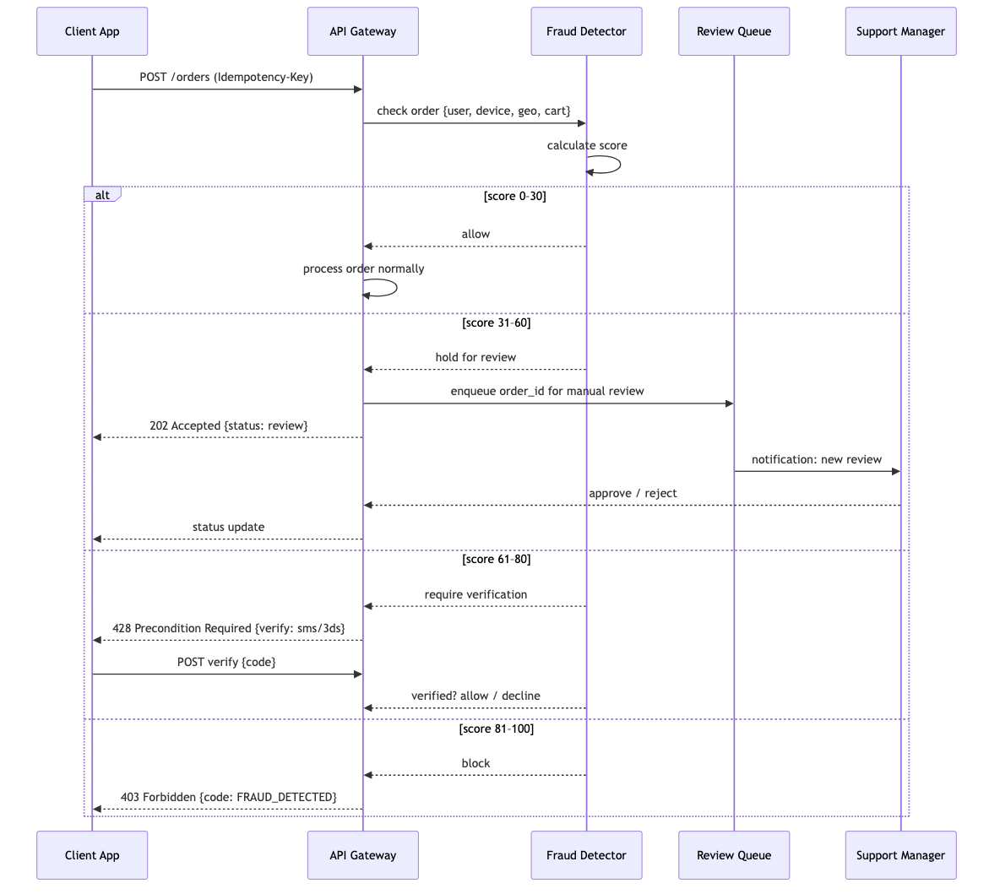
6.5.4 Интеграции
| Источник | Данные | Статус | Примечание |
|---|---|---|---|
| Внутренние (наши сервисы) | История заказов, device fingerprint, геолокация | MVP | Основной источник |
| Платежный шлюз (Т-Банк) | 3DS результат, BIN-проверка | MVP | Стандартная проверка карты |
| Dadata / ФНС | Валидация адреса доставки | MVP | Блокировка несуществующих адресов |
| Внешние фрод-сервисы (V2) | Score от Kaspersky / Group-IB | V2 | Дополнительный слой |
| Кредитные истории (V3) | Проверка через БКИ | V3 | Для B2B с отсрочкой платежа |
6.5.5 Feedback loop
| Действие | Периодичность | Описание |
|---|---|---|
| Разметка confirmed fraud | Ежедневно | Менеджер размечает отклонённые заказы: confirmed_fraud
/ false_positive |
| Пересчёт порогов | Раз в месяц | Анализ ROC-кривой: корректировка порогов score для минимизации false positive |
| Обновление device fingerprint DB | Непрерывно | Блокировка новых эмуляторов / VM по сигнатурам |
| Отчёт для бизнеса | Раз в неделю | Сколько фрода отловлено, сколько пропущено, сумма предотвращённых потерь |
6.5.6 Метрики эффективности
| Метрика | Цель | Формула |
|---|---|---|
| Detection rate (DR) | > 80% | confirmed_fraud / total_fraud × 100% |
| False positive rate (FPR) | < 5% | false_positive / total_alerts × 100% |
| Manual review time | < 30 мин | Среднее время проверки одного заказа |
| Chargeback ratio | < 0.5% | chargebacks / total_orders × 100% |
7. Testing Strategy (Стратегия тестирования)
7.1 Test Levels
| Уровень | Что тестируем | Инструменты | Цель |
|---|---|---|---|
| Unit | Use cases, business rules, DB queries | RSpec (Rails), testify (Go), mockery (mock
generation) |
Каждый use case изолированно, mock всех внешних зависимостей |
| Integration | Реальный сервис с реальными зависимостями | testcontainers (PostgreSQL, Redis, RabbitMQ в
Docker) |
Проверка, что сервис корректно работает с БД, брокером, кэшем |
| Contract | API между сервисами | Pact (CDC) или Spring Cloud Contract | Сервис A → Сервис B: контракт на формат запроса/ответа |
| E2E | Полный сценарий через все сервисы | Cypress (Web), K6 (API), Detox (Mobile) | Оформление заказа → оплата → сборка → доставка |
| Load | RPS, latency, memory under load | K6 (скачать скрипты: search_only.js,
trip_matching.js, stress_test.js,
soak_test.js) |
Выдержит ли система 100 заказов/день? 1000? 10000? |
| Security | SAST, dependency scan, secrets | SonarCloud, Trivy, Aikido (каждом PR) | Утечки секретов, CVE в зависимостях |
7.2 Инфраструктура тестирования
| Компонент | Решение |
|---|---|
| CI-пайплайн | GitHub Actions: lint → unit → integration → E2E (параллельно) |
| Testcontainers | Docker-контейнеры для каждой интеграции: PostgreSQL, Redis, RabbitMQ, EventStoreDB |
| Mock generation | mockery для Go, rspec-mocks +
factory_bot для Rails |
| Тестовые данные | factory_bot (Rails), testdata (Go), seeds
для E2E |
| Code coverage | SimpleCov (Rails), go test -cover (Go), миморальный
порог 80% |
| Quality gate | SonarCloud блокирует PR при падении coverage или новых когнитивных сложностях |
7.3 Critical E2E Scenarios
- Оформление заказа: выбор магазина → каталог → корзина → слот → оплата онлайн → статус «Оплачен»
- Сборка: заказ появляется у пикера → пикер отмечает товары → замена → упаковка → «Передан курьеру»
- Доставка: назначение курьера → построение маршрута → статус «В пути» → ETA → «Доставлен»
- Отмена: отмена до сборки → возврат средств; отмена после сборки → комиссия
- Промокод: ввод → пересчёт суммы → применение → отмена применения
- Добавление в заказ после оформления: новый товар → обновление корзины пикера → сборка
7.4 Load Testing Targets
| Сценарий | Целевые метрики |
|---|---|
| 100 одновременных пользователей просматривают каталог | p95 < 500ms |
| 10 заказов/мин | Order Service p95 < 200ms, 0 ошибок |
| Dispatch: 1000 заказов за цикл (30 сек) | Алгоритм укладывается в 5 секунд |
| ETA estimator: 100 запросов/сек | p95 < 300ms |
8. Project Estimation & Roadmap (Оценка и план)
8.1 Effort Estimation by BP
Полная таблица оценок вынесена в ESTIMATION.md.
Итого: ~350 человеко-дней (≈ 17–18 месяцев работы команды из 3–4 человек) С поправкой на риски (×1.2 интеграции ×1.3 новизна) = 546 чел.-дней (~27 месяцев / 3 dev)
8.2 Store Integration Costs
Источник: Раздел 5.8 исходного документа.
| Компонент | Дней |
|---|---|
| Модель данных: сети, магазины, зоны, товары, цены | 5 |
| Интеграция с 1-й сетью (API/парсинг + нормализация) | 15 |
| Каждая следующая сеть (тиражирование) | 8 |
| Система синхронизации: шедулер, обновление цен/остатков | 10 |
| Каталог: категории, фильтры, поиск (Elasticsearch) | 10 |
| API каталога с учётом магазина пользователя | 8 |
| Админка: управление сетями, маппинг категорий | 8 |
| Итого | 64 |
8.3 MVP vs V2 vs V3 Roadmap
8.3.1 MoSCoW-приоритизация внутри MVP
| Приоритет | Фичи | Оценка (чел.-дней) |
|---|---|---|
| M — Must have (без этого продукт не работает) | Регистрация по телефону (BP-01), Каталог с 1 сетью (BP-02), Корзина → Оформление → Оплата (Т-Банк) (BP-03 + BP-04), Приложение пикера (базовое: сканер, замена, упаковка) (BP-05), Приложение курьера (базовое: навигация, приём оплаты) (BP-06), Админка (базовое: заказы, товары, пользователи) (BP-11), Инфраструктура (Docker Compose + CI/CD MVP) | 210 |
| S — Should have (важно, но можно в V1.1) | Возврат и отмена (BP-07), Уведомления push/SMS (BP-09), Личный кабинет и история (BP-10), Промокоды (BP-08), Аналитика базовая (BP-12), S3/CDN для изображений | 70 |
| C — Could have (если успеваем) | Базовый поиск через PG ILIKE (не ES), Telegram-бот поддержки, Опция «Можно раньше», Трекинг для клиента (базовый: статусы) | 30 |
| W — Won’t have (V2) | Dynamic Pricing, B2B, Elasticsearch, Мониторинг (Prometheus), Huawei/RuStore, B2B | 40 |
| MVP total | ~310 |
8.3.2 Дорожная карта по этапам
| Этап | Длительность | Ключевые фичи | Оценка |
|---|---|---|---|
| MVP | 6–8 мес | 1 сеть (Лента), регистрация, каталог, корзина, Т-Банк, пикер/курьер базовые, админка, Docker Compose | ~310 чел.-дней |
| V1.x | +2–3 мес | Доработки MVP: возвраты, уведомления, промокоды, аналитика | +70 |
| V2 | +4–6 мес | 2–3 сети (METRO, Вкусвилл), СБП, Prometheus+Grafana, Sentry, Elasticsearch, B2B, Push, Huawei/RuStore | +120 |
| V3 | +6–12 мес | K8s, Dynamic Pricing, OSRM+ML ETA, dispatch engine, Честный знак, лояльность, баллы | +150 |
9. Appendices (Приложения)
9.1 О документе: Discovery-фаза
Настоящий документ — результат Discovery-фазы (исследовательского этапа перед разработкой). Discovery проведён для всесторонней оценки идеи, снижения рисков и формирования единого видения продукта у всех стейкхолдеров.
| Аспект | Описание |
|---|---|
| Цель | Оценить коммерческий потенциал, сформировать общее видение, выявить риски, заложить основу для планирования |
| Что сделано | Анализ рынка и конкурентов, исследование ЦА (B2C + B2B), описание AS IS / TO BE, прототипирование архитектуры, сбор и приоритизация требований, выявление рисков |
| Участники | Хранитель идеи, аналитики (системные/бизнес), архитекторы, UX |
| Результаты | SRS-документ (настоящий), границы проекта, оценка сроков и бюджета (~350 чел.-дней), Roadmap (MVP/V2/V3), 14 описанных бизнес-процессов |
| Риски, зафиксированные на Discovery | Сложность интеграций с сетями (разные API, форматы данных), неточность онлайн-остатков, offline-сценарии пикеров/курьеров, юридические требования (152-ФЗ, 54-ФЗ) |
Ключевой вывод Discovery: продукт востребован (рынок доставки продуктов растёт), B2C — бизнес на объёме (низкая маржинальность), B2B — бизнес на сервисе (высокая маржинальность). Рекомендуемый старт: 1 сеть (Лента), Санкт-Петербург, MVP за 6–8 месяцев.
9.2 References & Open-Source
Полный каталог референсов вынесен в references/README.md.
9.3 Completeness Checklist
Источник: Приложение B исходного документа.
Разделы считаются готовыми после переноса содержимого из исходного документа.
- ✅ 1.1 Purpose & Scope (включая AS IS, Geography, Personas)
- ✅ 1.2 Glossary
- ✅ 1.3 Non-Functional Requirements (включая Food Safety, i18n)
- ✅ 1.4 External Integrations
- ✅ 1.5 Error Handling
- ✅ 1.6 Business Model (включая Franchise)
- ✅ 2.1–2.9 Architecture (включая Event Catalog, Лента API, Façade)
- ✅ 3.1–3.6 Data Model
- ✅ 4.1–4.9 Functional Requirements (все 14 BP + Feature Map + Offline + Support)
- ✅ 5.1–5.9 Infrastructure (включая Incident, Backup, FinOps, Readiness Checklist)
- ✅ 6.1–6.4 Security & Compliance (включая Accessibility)
- ✅ 7.1–7.4 Testing
- ✅ 8.1–8.3 Estimation & Roadmap
- ✅ 9.1–9.5 Appendices
9.4 Developer Quick-Start
| Параметр | Значение |
|---|---|
| Репозиторий | Монорепозиторий: /services/ (backend),
/apps/ (frontend, mobile), /infra/ (Docker,
CI) |
| Backend | Rails 5.1+, Ruby 2.6–2.7, Sidekiq ~6.x |
| Frontend | Next.js 10, React 17, MobX ~6.x |
| Mobile | Flutter 3.x (iOS + Android) |
| База данных | PostgreSQL 13+ |
| Очереди | RabbitMQ |
| Кэш | Redis 6+ |
| Поиск | Elasticsearch 7.x (V2) |
| Инфраструктура | Docker Compose (dev), Selectel (prod) |
| CI/CD | GitHub Actions: lint → unit → integration → E2E |
| Мониторинг | Sentry (ошибки), Prometheus + Grafana (V2) |